A compensator is a component of the total control system designed to compensate for deficiencies in the plant. If a control system with a plant, sensor, and feedback loop satisfies your requirements, you do not need compensation. However, if it does not, a compensator is added—a hardware device or software in a digital computer—to improve performance.
With reference to the picture below:
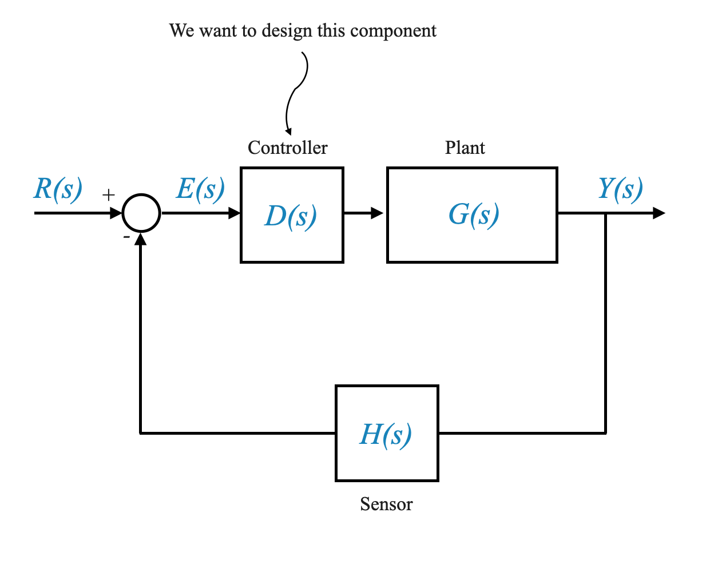
If the controller \(D(s)\) is not included, the diagram still represents a complete control system. If this satisfies your requirement, no further compensation is needed.
Our primary objective is to design an effective compensator, represented as $ D(s) $ in transfer function terminology, to ensure our control system adheres to specific performance criteria.
We will proceed under the assumption that the fundamental architecture of the system remains constant. This implies that elements like the plant and the sensor will not undergo any modifications. The sole variable open to alteration is the compensator, $ D(s) $. This restriction is based on the relative simplicity of modifying $ D(s) $: it usually involves updating the software in digital controllers or adjusting the operational amplifier (OpAmp) circuitry.
In the realm of control systems, a compensator plays a pivotal role. It serves to adjust the system’s behavior to meet targeted specifications, which may include enhanced stability, faster response times, or reduced steady-state errors. Essentially, a compensator fine-tunes the dynamics of the system to achieve our desired outcomes.
To illustrate, consider a control system equipped with a basic feedback loop. Should this system fall short of meeting its performance benchmarks, we introduce a compensator. For example, in a scenario where the system’s response is slower than required, a compensator can be engineered specifically to expedite the system’s response time.
Root Locus Method in Control Engineering
Introduction to the Root Locus Method
The root locus method is a graphical approach used in control systems to determine the stability and transient response of a system as a function of a varying parameter, typically a gain.
Key Performance Measures: Translating Performance into Poles
Recall the key performance measures in control systems:
\(T_r\) (Rise Time)
\(T_p\) (Peak Time)
\(\zeta\) (Damping Ratio)
\(\omega_n\) (Natural Frequency)
\(M_p\) (Maximum Peak)
Settling Time
Steady-State Error
We’ve observed that performance measures often present conflicts; however, the transient response of the system is primarily governed by two key parameters: \(\zeta\) (damping ratio) and \(\omega_n\) (natural frequency). These parameters influence the system’s performance, as they determine the behavior of the system during transient states - those temporary periods before reaching steady-state.
Consequently, understanding and controlling the transient response translates into strategically positioning a pair of dominant closed-loop poles in the s-plane. In essence, the parameters \(\zeta\) and \(\omega_n\) are important in shaping the overall performance of a control system.
The Root Locus method involves plotting the possible locations (locus) of the closed-loop system poles as a system parameter (usually a gain) varies. This plot helps visualize how the closed-loop poles move in response to changes in this parameter.
Understanding the Root Locus Plot
Consider a system with the open-loop transfer function
As \(K\) increases further, the poles become complex conjugate.
Visualising it in Python
To illustrate how the poles of a system move as the parameter \(K\) changes, we can write a Python script.
import numpy as npimport matplotlib.pyplot as pltfrom ipywidgets import interact, FloatSlider# Function to calculate and plot poles for a given Kdef plot_poles(K): discriminant =1-4* K# Check if the discriminant is negative (complex poles)if discriminant <0: real_part =-1.5 imaginary_part =0.5* np.sqrt(-discriminant) poles = [real_part +1j* imaginary_part, real_part -1j* imaginary_part]else:# Real poles poles = [-1.5+0.5* np.sqrt(discriminant), -1.5-0.5* np.sqrt(discriminant)]# Clear the previous plot plt.clf()# Plot the polesfor pole in poles: plt.plot(np.real(pole), np.imag(pole), 'bo') # Blue dots for poles plt.xlim(-3, 1) plt.ylim(-2, 2) plt.xlabel('Real Part') plt.ylabel('Imaginary Part') plt.title(f'Movement of Poles for K = {K}') plt.grid(True) plt.axhline(0, color='black') # X-axis plt.axvline(0, color='black') # Y-axis plt.show()# Create an interactive slider for Kinteract(plot_poles, K=FloatSlider(value=0, min=0, max=1, step=0.01, description='Gain K:'))
In the root locus diagram for this system, we see two branches starting at -1 and -2, respectively, on the real axis.
As $ K $ increases, these branches would converge towards -1.5.
Beyond $ K = $, the branches break off into the upper and lower halves of the complex plane, forming a mirror image about the real axis.
The branches continue vertically upwards and downwards, respectively, indicating the movement of the complex conjugate poles. The poles must lie on the vertical line because the real part is always \(-\frac{3}{2}\).
In a root locus plot, the term “branch” refers to the path that a pole of the closed-loop system takes in the complex plane as a particular parameter (in this case, $ K $) varies.
For the given system, there are two branches because it is a second-order system, resulting in two poles. Each branch represents the trajectory of one of these poles.
Initial Condition: $ K = 0 $
When $ K = 0 $, the poles of the closed-loop system are the same as the open-loop poles.
The open-loop transfer function is $ $, and its poles are at $ s = -1 $ and $ s = -2 $.
Thus, at $ K = 0 $, the closed-loop poles start at these open-loop pole locations: one pole at -1 and the other at -2.
As $ K $ Increases
As $ K $ begins to increase from 0, the closed-loop poles start moving from these initial positions.
With a slight increase in $ K $, the poles move along specific paths in the s-plane.
At $ K = $
When $ K $ reaches $ $, a critical change occurs.
Substituting $ K = $ into the formula, we find that the discriminant becomes zero, making the poles real and repeated, both located at $ s = -1.5 $.
Visualization of Pole Movement
One root moves from -2 towards -1.5, and the other root moves from -1 towards -1.5.
These movements can be visualized as two branches of the root locus converging at $ s = -1.5 $.
Beyond $ K = $
For $ K > $, the discriminant becomes negative, resulting in complex conjugate poles.
The real part of these poles remains constant at $ - $, while the imaginary part increases as $ K $ increases, indicating that the poles move vertically on the s-plane.
These poles will always lie on a vertical line in the s-plane with the real part being always $ -1.5 $.
Implications for System Performance
The root locus plot visually represents how the system’s dynamic characteristics like rise time, settling time, peak overshoot, and the damping ratio $ $ and natural frequency $ _n $ are influenced by the variation in $ K $.
Crucially, the system remains stable for all values of $ K $ as the poles never cross the imaginary axis (Jω axis). This is evident from the root locus plot.
Relating Root Locus to System Performance
Visualization of Performance Parameters
The root locus plot is not just a representation of pole movement; it’s a powerful tool to visualize key performance parameters like rise time, settling time, peak overshoot, damping ratio ($ \(), and natural frequency (\) _n $).
The position and movement of the poles on this plot directly relate to how these parameters will manifest in the system’s response.
Stability Analysis
One critical aspect of the root locus plot is its ability to provide quick insights into the system’s stability.
For the given system, as long as the poles (represented by the branches) do not cross into the right half of the complex plane (the imaginary axis, or \(j\omega\) axis), the system remains stable.
Since the poles in this system never cross the imaginary axis for any value of $ K $, we can conclude that the system remains stable for all values of $ K $ from 0 to infinity.
Simplifying Complex Analysis
The root locus method simplifies the analysis of complex systems. Even in scenarios where the system’s dynamics are more intricate, the root locus plot provides a clear and immediate understanding of how changes in a parameter (like $ K $) will affect the system’s performance and stability.
Understanding and Applying the Root Locus Method in Control System Design
The root locus plot provides a comprehensive depiction of a control system’s behavior based on the variation of a single, chosen design parameter. This design parameter could be, for instance, the derivative constant in a Proportional-Derivative (PD) controller, the integral constant in a Proportional-Integral (PI) controller, the gain of an amplifier, or other similar system elements. Initially, you may focus on just one parameter, although in practice, multiple parameters can influence system behavior.
The process using the root locus method involves two primary steps:
Identify the Design Parameter: Determine which parameter in your control system you want to adjust. This parameter is what you’ll use to assess and modify the system’s performance.
Plot the Root Locus: Create a root locus plot by varying the chosen parameter (typically from 0 to infinity). This plot visually represents how the system’s poles—and hence its behavior—change as the parameter is adjusted.
The root locus plot serves as a dynamic tool, enabling you to visually correlate variations in your chosen design parameter with changes in the system’s performance. By examining this plot, you can determine the optimal value of the design parameter that aligns with your specific performance requirements, such as response speed, stability, or overshoot.
The root locus plot is an essential and complete graphical representation that allows you to understand and optimize a control system’s response based on a key design parameter.
We can for example discuss what happens to the damping of the system as we increase \(K\):
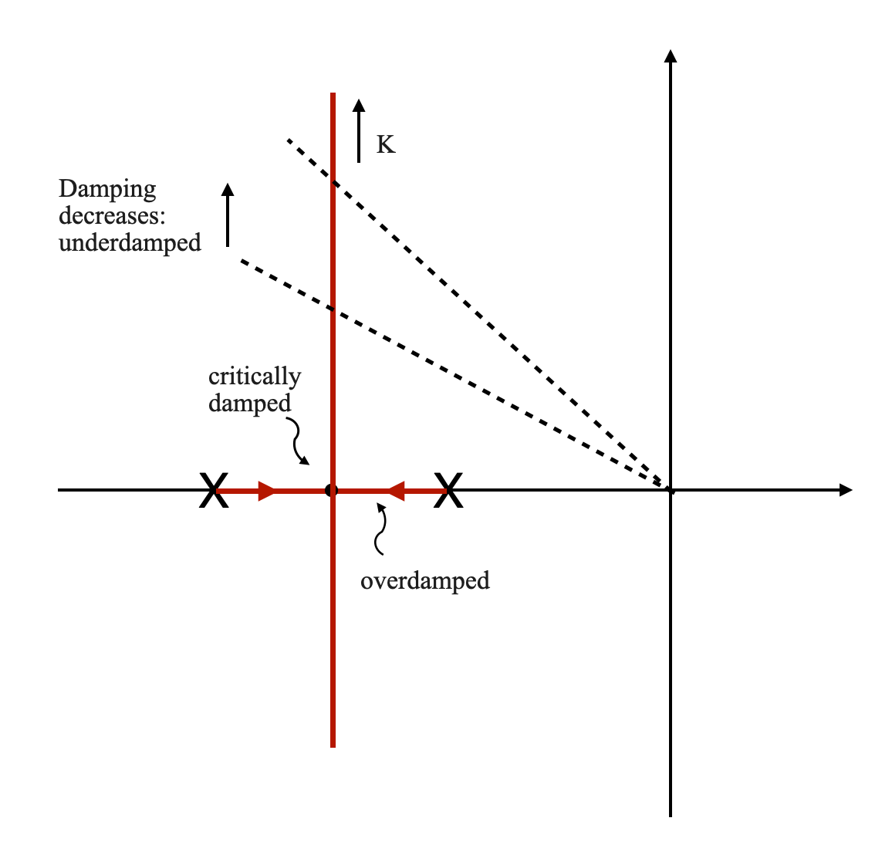
Example 2
Consider a system with the open-loop transfer function
\[G(s) = \frac{K}{s(s + 1)(s + 2)}\]
where \(K\) is a variable gain.
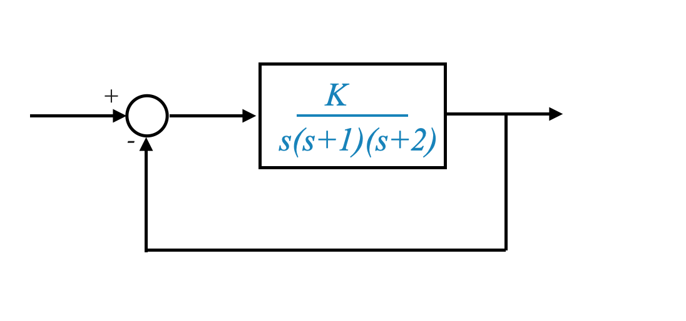
The plant has now an integrator.
The root locus for this case is:
import numpy as npimport matplotlib.pyplot as pltimport control as ctlfrom ipywidgets import interact, FloatSlider# Define the transfer function G(s) = K / (s^3 + 3s^2 + 2s + K)# where K is the gain that will be varied.def transfer_function(K): numerator = [K] denominator = [1, 3, 2, K]return ctl.tf(numerator, denominator)# Function to calculate and plot poles for a given Kdef plot_poles(K):if K ==0: poles = np.roots([1, 3, 2, K])else: system = transfer_function(K) poles = ctl.pole(system)# Clear the previous plot plt.clf()# Plot the polesfor pole in poles: plt.plot(np.real(poles), np.imag(poles), 'bo') # Blue dots for poles plt.xlim(-3, 1) plt.ylim(-2, 2) plt.xlabel('Real Part') plt.ylabel('Imaginary Part') plt.title(f'Movement of Poles for K = {K:.2f}') plt.grid(True) plt.axhline(0, color='black') # X-axis plt.axvline(0, color='black') # Y-axis plt.show()# Create an interactive slider for Kinteract(plot_poles, K=FloatSlider(value=0, min=0, max=20, step=0.01, description='Gain K:'))
<function __main__.plot_poles(K)>
Or:
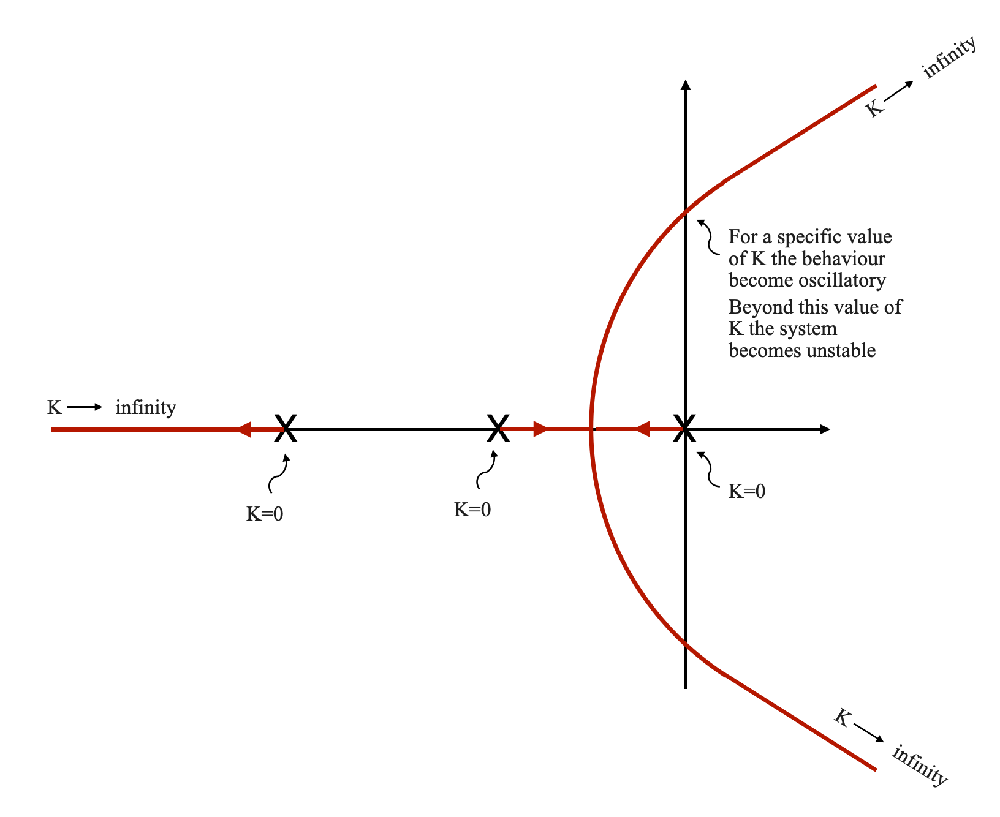
Initial Points: The diagram starts with three points on the real axis, representing the open-loop poles at $ K = 0 $.
Branches: Three lines (branches) emerge from these points, each showing the path of a root as $ K $ increases.
Branch 1 and 2: Two branches might show roots moving towards each other, becoming real and repeated, then splitting into complex conjugate pairs as they approach the imaginary axis.
Branch 3: The third branch represents the path of the third root, which may move independently of the other two.
Direction Indicators: Arrows along the branches indicate the direction of movement as $ K $ increases.
Critical Points:
Points where roots become complex conjugate.
Points where the system becomes oscillatory and then unstable.
Initial conditions
At $ K = 0 $, the roots of the system are located at the open-loop poles. These are the starting points for the root locus branches.
As $ K $ increases from 0, the roots begin to move along distinct paths. For a third-order system, there are three branches in the root locus plot.
Branches of the Root Locus
Each branch represents the path of one root in the complex plane.
One root moves in one direction, the second root in another, and the third root follows a separate path.
At a specific value of \(K\), the two roots become real and repeated, while the third root is at a different location.
The Emergence of Complex Conjugate Roots
With a further increase in $ K $, the system exhibits complex conjugate roots.
Two roots approach the imaginary axis, indicating a trend towards oscillatory behavior and potential instability.
Significance of the Third Root
If this root is sufficiently far from the real part of the complex conjugate roots (by a factor of four to five times), its impact on the system’s dynamics is negligible (dominance condition).
System Stability and Oscillations
As $ K $ continues to increase, the system moves closer to the imaginary axis.
A certain value of $ K $ causes the system to become oscillatory. Further increases in $ K $ lead to instability.
Comments
Visibility of System Behavior: The root locus plot clearly illustrates how the system’s behavior changes with $ K $, showcasing stability, oscillatory tendencies, and instability.
Comparison with Routh Stability Criterion: While the Routh Stability Criterion also provides stability ranges, the root locus plot offers a more detailed visualization of the system poles within these ranges. It tells you where the roots are, and this improves our understanding of system dynamics.
Example - Adding A Zero
In this section of the notebook, we will explore the concept of root locus analysis focusing on a system with a zero. This is equivalent to having a Proportional-Derivative (PD) control.
Consider a control system represented by the transfer function:
\[ G(s) = \frac{K (s + 5)}{(s + 1)(s + 2)} \]
Here, $ K $ is the gain, and the system includes a zero at $ s = -5 $, resembling the addition of a PD controller. This system is a type-0 system with PD control. It could represent various real-world systems like temperature control or liquid level control.
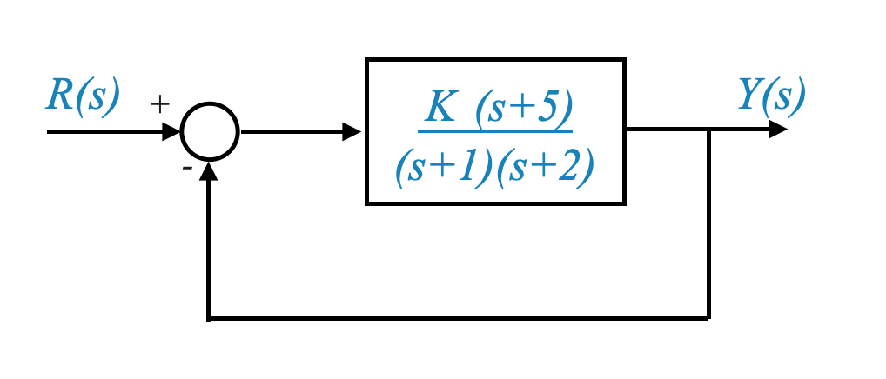
import numpy as npimport matplotlib.pyplot as pltimport control as ctlfrom ipywidgets import interact, FloatSlider# Define the transfer function G(s) = K (s+5)/ (s^2 + 3s + Ks + 2 + 5K)# where K is the gain that will be varied.def transfer_function(K): numerator = [K, 5*K] denominator = [1, 3+ K, 2+5*K]return ctl.tf(numerator, denominator)# Function to calculate and plot poles for a given Kdef plot_poles(K):if K ==0: poles = np.roots([1, 3+ K, 2+5*K])else: system = transfer_function(K) poles = ctl.pole(system)# Clear the previous plot plt.clf()# Plot the polesfor pole in poles: plt.plot(np.real(pole), np.imag(pole), 'bo') # Blue dots for poles# Plot the zero at s = -5 plt.plot(-5, 0, 'rx') # Red 'x' for zero plt.xlim(-12, 1) plt.ylim(-5, 5) plt.xlabel('Real Part') plt.ylabel('Imaginary Part') plt.title(f'Movement of Poles for K = {K:.2f}') plt.grid(True) plt.axhline(0, color='black') # X-axis plt.axvline(0, color='black') # Y-axis plt.show()# Create an interactive slider for Kinteract(plot_poles, K=FloatSlider(value=0, min=0, max=20, step=0.01, description='Gain K:'))
<function __main__.plot_poles(K)>
And the resulting Root Locus Diagram is:
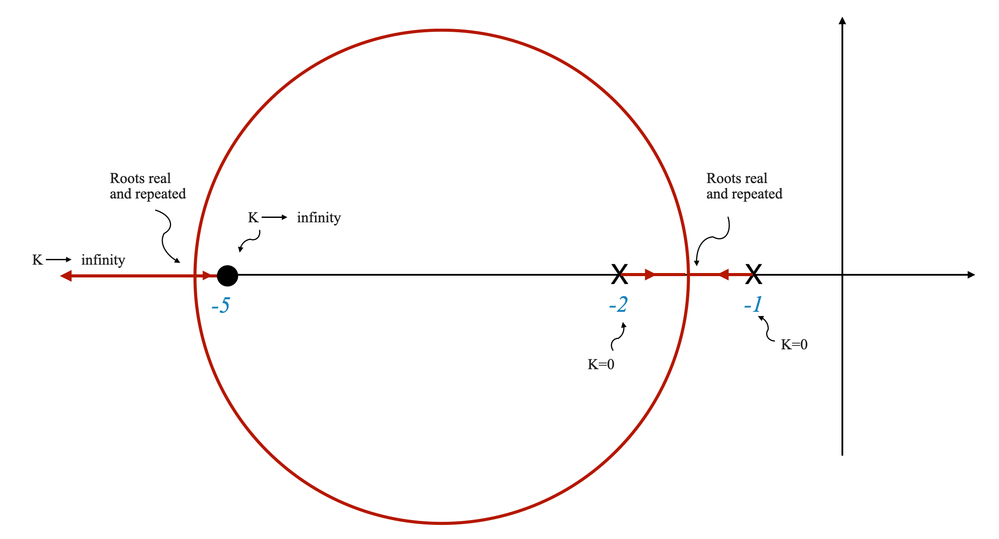
Root Locus Sketch
Identifying Poles and Zeros
Poles: $ s = -1, -2 $
Zero: $ s = -5 $
Characteristic Equation
With $ K $ as a running parameter, the characteristic equation is:
Start with open-loop poles at $ s = -1 $ and $ s = -2 $.
At $ K = 0 $, the system behaves purely based on these open-loop poles.
As $ K $ Increases
Two branches emerge from the open-loop poles.
Branch 1: Moves from $ s = -1 $ towards the right.
Branch 2: Moves from $ s = -2 $ towards the right.
Analysis at Critical Points
As $ K $ increases further, the roots become complex conjugate.
The point where the roots are real and repeated is critical, indicating a transition in system dynamics.
Note that there are two values of \(K\) for which the roots are real and repeated.
At $ K = $, observe the behavior of the roots.
Impact of PD Control on System Stability
Addition of a zero (PD control) shifts the root locus towards the left, which implies better stability.
The system’s stability can be visualized through the root locus plot, where the roots move towards or away from the imaginary axis.
Compare this with what happened when we added the integrator that instead pull the branches towards the RHP.
Understanding System Dynamics
In the provided diagram, as $ K $ is incrementally increased, the two poles shift towards the left on the real axis, indicating an increase in their negative real components. Concurrently, there is an observable increase in the imaginary parts of these poles, though this effect is less pronounced compared to the changes in the real parts.
The real component of the poles, represented by $ _n $, is directly linked to the system’s settling time, which can be mathematically expressed as $ t_s = $.
With the increase in $ K $, there is a notable rise in the real part $ _n $ of the poles. This leads to a reduction in the settling time, thereby making the system respond more quickly.
Pop-up Question: How does the addition of a PD controller influence the system’s overshoot and settling time?
Answer: The PD controller’s zero typically reduces overshoot and improves settling time by shifting the root locus to the left, thus increasing the damping ratio $ $.
Translating Performance Specifications into Pole Locations
The Root Locus Sketch and System Performance
Root locus analysis translates key performance measures like rise time (\(t_r\)), settling time (\(t_s\)), peak time (\(t_p\)), and maximum overshoot (\(M_p\)) into specific closed-loop pole locations in the s-plane.
These performance measures are essential in determining how quickly and accurately a system responds to changes or disturbances.
Design Objectives
The core objective in this design process is to determine where the closed-loop poles should be located to meet the desired system performance.
Once these optimal pole positions are identified, the corresponding value of the parameter $ K $ can be calculated. This step essentially ‘designs’ the system parameter $ K $.
Going Back to the example: Considering the Zero at $ s = -5 $
The system includes a zero at $ s = -5 $, which is both an open-loop and a closed-loop zero.
The location of this zero relative to the pole locations significantly impacts the system’s response.
Impact of the Zero on System Dynamics
The zero at $ s = -5 $ introduces a peaking effect in the system response. This effect manifests as an early peak and potentially larger overshoot in the system’s output.
To mitigate this peaking effect, the design should aim for a larger damping ratio ($ $). A higher $ $ value usually corresponds to less oscillatory response and reduced overshoot.
Design Strategy for Damping Ratio
Adjusting Pole Locations
If the zero at $ s = -5 $ is close to the closed-loop poles, it significantly influences the system response.
To counterbalance the effect of this zero, the design should ‘pull’ the closed-loop poles towards a position that increases $ $.
Increasing $ $ means moving the poles further into the left half of the s-plane.
Practical Design Implications
In this example, the exact positioning of the closed-loop poles for an optimal response depends on the relative significance of the zero at $ s = -5 $.
If the effect of the zero is substantial, poles should be placed further right compared to a scenario where the zero’s influence is less pronounced. This is because the peaking pull of the zero will compensate this action.
Constructing and Analyzing Root Locus Plots
This chapter explores the construction and analysis of root locus plots in control systems, focusing on how they can be used to assess and design system responses.
Consider a general control system with a feedback loop. The closed-loop transfer function is represented as:
Here, $ G(s) $ is the forward path transfer function, and $ H(s) $ is the feedback path transfer function.
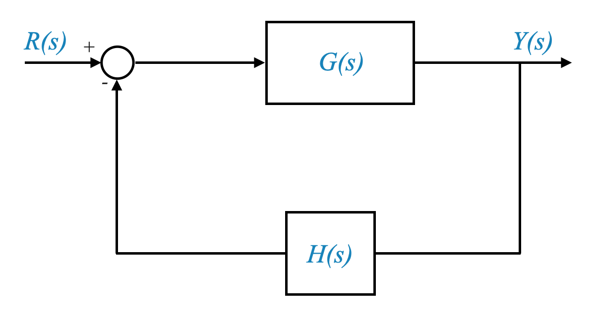
Defining Loop or Open-Loop Transfer Function
The transfer function $ G(s)H(s) $ can be interpreted as the product of the forward path and feedback path transfer functions when the feedback loop is open:
\[
\frac{B(s)}{R(s)} = G(s)H(s)
\]
This transfer function is called: open-loop or loop transfer function.
It correspond to the following:
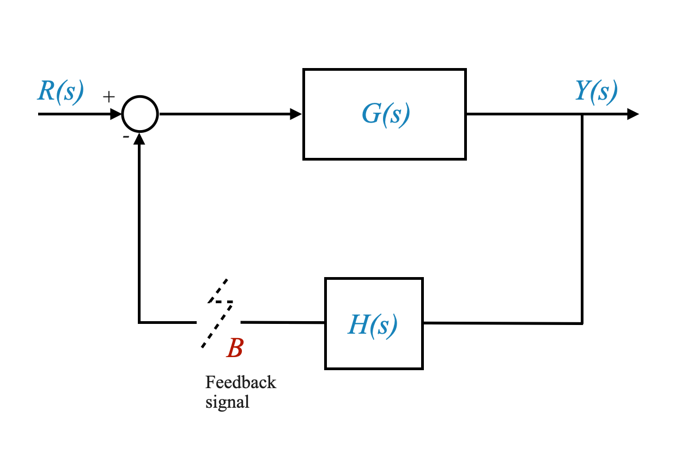
If we break the loop after the sensor, the signal \(B\) is the output of the sensor and the transfer function between the input and the output of the sensor is the loop transfer function: \(G(s)H(s)\).
For a unity-feedback system, where $ H(s) = 1 $, the open-loop transfer function simplifies to the forward path transfer function $ G(s) $.
Characteristic Equation of the System
The characteristic equation, crucial for determining the system’s stability, is given by:
\[ 1 + G(s)H(s) = 0 \]
where $ G(s)H(s) $ is the open-loop transfer function.
We are interested into the roots of this equation. They are the closed-loop poles and they are going to give us the transient behaviour of the system.
Factorizing the Open-Loop Transfer Function
An open-loop transfer function can generally be expressed in the form (which turns out more convenient to plot the Root Locus):
\[ G(s)H(s) = \frac{K \prod_{i=1}^{m} (s + z_i) }{ \prod_{j=1}^{n} (s + p_j) }\]
Here, $ K $ is the gain, $ z_i $ are the zeros, and $ p_j $ are the poles of the transfer function. Obviously, $ z_i, p_j $ are positive if they lie in the LHP, and negative otherwise.
Note that we are not ruling out that poles can be in the RHP. An open loop system can be unstable, in which case the feedback loop will need to make it stable.
The key concept to emphasize here is the distinction between the permissible locations of poles in open-loop and closed-loop systems:
Closed-Loop Poles: For a system to be stable, its closed-loop poles must reside in the left-half of the complex plane. This is a fundamental requirement because poles in the right-half plane would indicate an unstable system response in closed-loop operation.
Open-Loop Poles: In contrast, the open-loop system, which is the system without the feedback loop engaged, can have poles in the right-half plane. This does not necessarily imply that the overall system is unstable. The design process often involves taking an open-loop system that may be unstable (or less stable than desired) and applying feedback control to achieve stability in the closed-loop system.
The distinction is critical in control system design: while we can tolerate and work with right-half plane poles in an open-loop context, ensuring stability in the closed-loop system requires all poles to be in the left-half plane.
Understanding Root Locus Plots
We now call:
\[ F(s) = G(s)H(s) = \frac{K \prod_{i=1}^{m} (s + z_i) }{ \prod_{j=1}^{n} (s + p_j) }\]
and the characteristic equation becomes:
\[
1 + F(s) = 0
\]
Constructing the Root Locus Plot: Scanning the Entire S-Plane
The root locus method involves scanning the entire s-plane, which comprises all possible values of $ s = + j$, where $ $ is the real part and $ $ is the imaginary part.
This scanning process identifies those points in the s-plane where the characteristic equation $ 1 + F(s) = 0 $ is satisfied.
Once these points are identified, they are joined to create the root locus plot.
This plot represents the trajectory of the system’s poles as a specific parameter (often the gain $ K $) varies from 0 to infinity.
Mathematical Conditions for Root Locus
Criterion for Root Locus Points
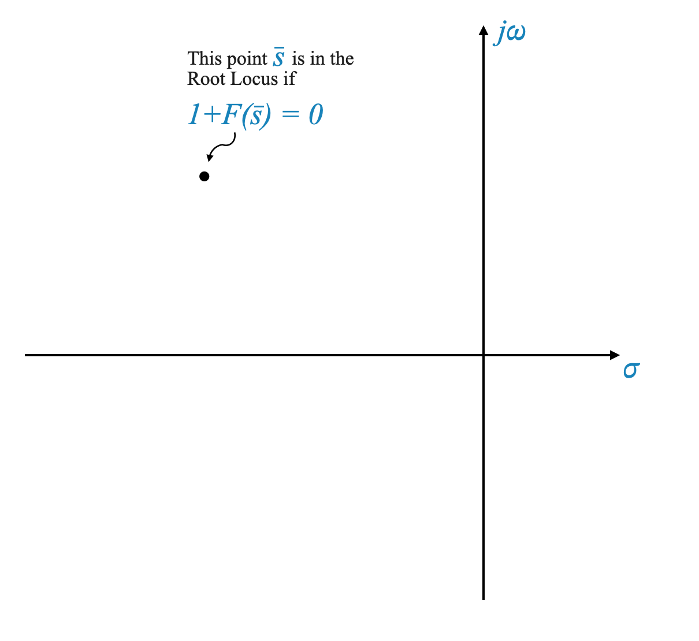
A point on the s-plane is a part of the root locus if it satisfies the condition $ 1 + F(s) = 0 $. This can be rephrased as $ F(s) = -1 $.
Mathematically, this translates to two conditions:
Magnitude Condition: $ |F(s)| = 1 $
Angle Condition: The angle of $ F(s) $ must be an odd multiple of 180 degrees. Formally, $ F(s) = (2q + 1) ^$, where $ q =0,1,2,…$
Criterion for Root Locus
Since we have taken:
\[ F(s) = \frac{K \prod_{i=1}^{m} (s + z_i) }{ \prod_{j=1}^{n} (s + p_j) }\]
A point in the s-plane is part of the root locus if it satisfies both the magnitude and angle conditions:
\[ \sum_{i=1}^{m} \angle (s + z_i) - \sum_{j=1}^{n} \angle (s + p_j) = \pm (2q + 1)180^\circ \]
where $ q $ is an integer.
Any point that satisfy these two conditions is a point in the Root Locus plot.
Exploring Magnitude and Angle Conditions in Root Locus
This part discusses how to determine the points on the s-plane that satisfy the magnitude and angle conditions of a given transfer function. We’ll use a simplified and graphical approach to make it easier to grasp.
Transfer Function
Consider the transfer function:
\[
F(s) = \frac{K}{s(s+1)(s+2)}
\]
Here, $ F(s) $ is a function of the complex variable $ s $, and $ K $ is a gain factor.
Magnitude Condition
The magnitude condition for the root locus can be expressed as:
\[
\frac{K}{|s||s+1||s+2|} = 1
\]
What this means is that for any point $ {s} = {} + j{} $ on the s-plane, if we multiply the distances from $ {s} $ to each of the poles (at $ s=0 $, $ s=-1 $, and $ s=-2 $) and adjust $ K $ such that this product equals 1, the point satisfies the magnitude condition.
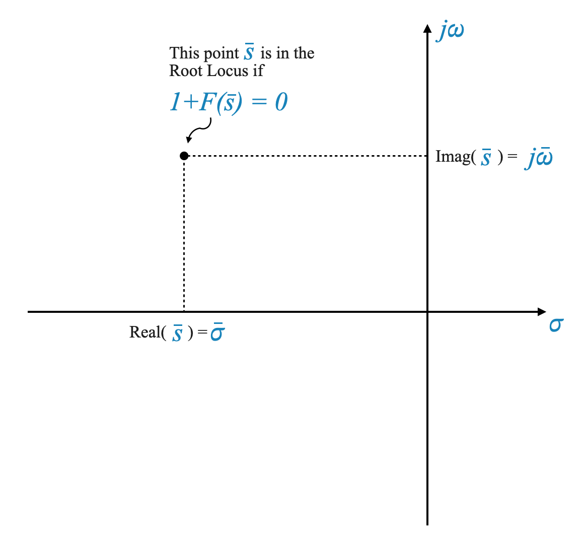
Visualizing the Magnitude Condition
To visualize this on a graph, imagine drawing lines from your point $ {s} $ to each of the poles.
The length of each line represents the magnitude (distance) to each pole.
Graphically, if you can adjust $ K $ such that the product of these lengths equals 1, then $ {s} $ satisfies the magnitude condition.
This implies that the sum of the angles made by lines from $ {s} $ to each pole, with respect to the positive real axis, should sum up to an odd multiple of 180 degrees.
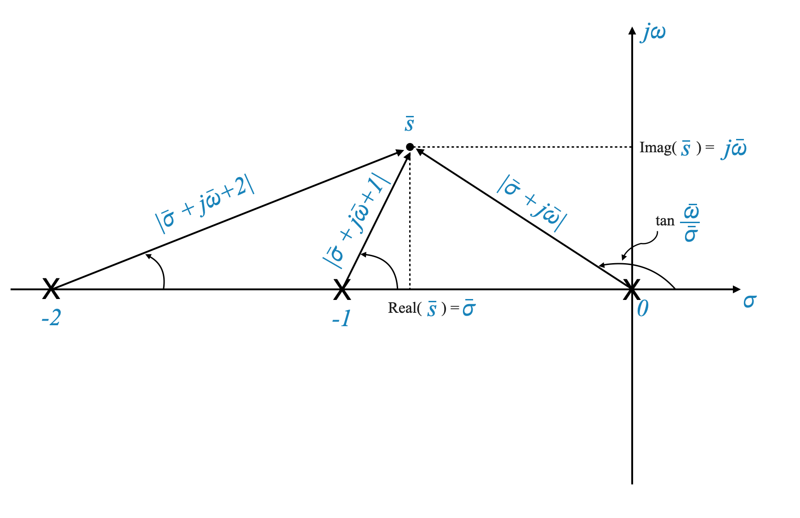
Graphical Interpretation of the Angle Condition
To calculate these angles, imagine drawing lines from your point $ {s} $ to each pole.
The angle each line makes with the positive real axis is what we need.
These angles can be calculated using trigonometry (specifically, tangent inverse).
If the sum of these angles (considering their signs) equals an odd multiple of 180 degrees, then $ {s} $ satisfies the angle condition.
Putting It All Together
By combining these two conditions, we can determine points on the s-plane that belong to the root locus of the system. These points help us understand how the system will behave for different values of $ K $, especially in terms of stability and response time.
In upcoming sections, we’ll apply these principles to specific examples, reinforcing the concepts and demonstrating their practical application in control system design.
Title: Understanding Root Locus: Magnitude and Angle Conditions
Explaining the Magnitude Condition
Let’s delve into the root locus method and understand how it helps us in control system analysis. The root locus method involves analyzing how the poles of the system’s transfer function move in the s-plane as we vary a parameter, typically the gain $ K $.
Consider the general form of a transfer function:
\[
F(s) = \frac{K \prod_{i=1}^{m} (s + z_i) }{ \prod_{j=1}^{n} (s + p_j) }
\]
where $ z_i $ are the zeros and $ p_j $ are the poles of the function.
The Magnitude Condition: - For any point $ s $ on the s-plane, we can find a particular value of $ K $ that satisfies the magnitude condition. Specifically, $ K $ needs to be the inverse of the magnitude that the transfer function $ F(s) $ takes at that point. - However, satisfying the magnitude condition alone doesn’t guarantee that the point $ s $ is on the root locus of the system.
The Angle Condition: Key to Root Locus
Why Not Every Point Satisfies the Root Locus Criteria: - The root locus plot is not just about satisfying the magnitude condition. It also crucially depends on the angle condition. - Not every point in the s-plane satisfies the angle condition, which is why we cannot assume that every point is part of the root locus.
Calculating the Root Locus: - To construct the root locus plot, we focus primarily on the angle condition. We scan the entire s-plane, identifying points where the angle condition is met. - Once we find these points, we can be assured that the magnitude condition will also be satisfied for some value of $ K $, thus confirming their place on the root locus. - This scanning leads to a plot because $ K $ varies from 0 to infinity, allowing us to trace the path of the poles across the s-plane as $ K $ changes.
Conclusion
The root locus is constructed by considering both magnitude and angle conditions, and the angle condition is particularly important.
With reference to the plot below
All the points on the red lines satisfy the angle criteria. Any other point does not satisfy it.
Exercise on Root Locus Analysis
Question:
Given a transfer function $ G(s) = $, determine the radius and center of the root locus plot.
Answer:
As an exercise, you can prove that the root locus plot in this case will have a center at \(( -b, 0 )\) and a radius determined by $ $.
We will now delve deeper into the root locus plot method. We’ll focus on sketching the root locus and leave its interpretation for later.
Understanding the Root Locus Equation
Let’s revisit the root locus equation:
\[1 + F(s) = 0\]
Where $ F(s) $ can be represented as:
\[
F(s) = K \frac{\prod_{i=1}^{m} (s + z_i) }{ \prod_{j=1}^{n} (s + p_j)}
\]
Here, $ K $ is the root locus gain, $ z_i $ are the zeros, and $ p_j $ are the poles.
Example: The Plant Model
Consider a plant with a transfer function defined as:
\[
G(s) = \frac{1}{(s+1)(s+2)}
\]
In this context, $ G(s) $ models the behavior of our system. Let’s explore what happens when we incorporate an amplifier into this system. The amplifier is characterized by a gain, denoted as $ K $.
When this amplifier with gain $ K $ is introduced, the system becomes a closed-loop system. The characteristic equation of this closed-loop system is then represented as follows:
\[
1 + \frac{K}{(s+1)(s+2)} = 0
\]
In this equation, $ F(s) $ is defined by the expression:
\[
F(s) = \frac{K}{(s+1)(s+2)}
\]
Here, $ F(s) $ captures the combined effect of the plant and the amplifier. The term “root locus gain” in this context refers to the amplifier gain $ K $.
Let’s delve into the concept of open-loop poles. The open-loop poles of a system are the values of $ s $ where the open-loop transfer function, in this case $ F(s) $, goes to infinity. For our function $ F(s) $, these poles are located at the values where the denominator equals zero. Therefore, for $ F(s) $, the open-loop poles are:
$ s_1 = -1 $
$ s_2 = -2 $
It’s important to note that in this example, $ F(s) $ aligns perfectly with the general form we discussed earlier for root locus plots. This alignment allows us to apply the root locus technique effectively to analyze how changes in the amplifier gain $ K $ affect the system’s behavior, particularly its stability.
import matplotlib.pyplot as pltimport control as ctl# Define the transfer function G(s)numerator = [1] # Coefficients of the numeratordenominator = [1, 3, 2] # Coefficients of the denominator (s^2 + 3s + 2)G_s = ctl.TransferFunction(numerator, denominator)# Get poles from the transfer functionpoles = ctl.pole(G_s)# Plottingplt.figure()plt.scatter(poles.real, poles.imag, marker='x', color='r') # Plot poles as red 'x'plt.axhline(y=0, color='k', linestyle='-') # x-axisplt.axvline(x=0, color='k', linestyle='-') # y-axisplt.xlabel('Real Axis')plt.ylabel('Imaginary Axis')plt.title('Pole-Zero Plot on the s-plane')plt.grid(True)plt.show()
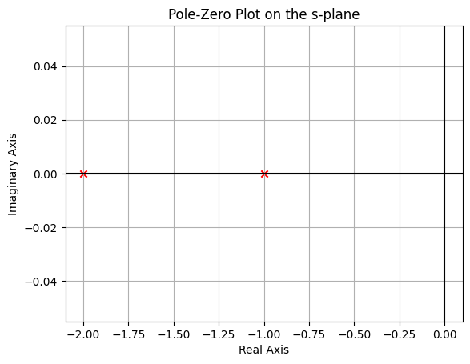
Example: Tachometric Feedback
Consider a control system with a specific plant. This plant is characterized by its transfer function:
\[
\frac{25}{(s+1)(s+2)}
\]
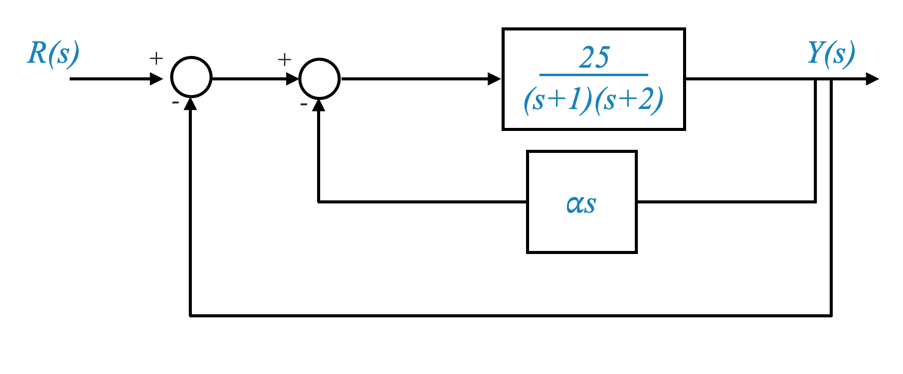
In this system, we also have a feedback loop. This loop is characterized by a parameter $ s $, and this type of feedback is known as tachometric feedback. Tachometric feedback is commonly used in position control systems to improve performance and stability.
In addition to the tachometric feedback, the system includes a main feedback loop, known as unity feedback. The complete configuration of this system can be visualized through the diagram provided (please refer to the image linked in the original text for a visual representation).
When we analyze this system, we pay special attention to the minor feedback loop that includes the tachometric feedback. By simplifying this part of the system, we can represent its dynamics with the following expression:
\[
\frac{25}{s^2 + 3s + 2 + 25\alpha s}
\]
This expression is a result of combining the plant’s transfer function with the tachometric feedback parameter $ $.
To understand the stability and behavior of the closed-loop system, we look at its characteristic equation:
\[
s^2 + 3s + 2 + 25\alpha s + 25 = 0
\]
In this equation, the variable $ $, representing the tachometric constant, is key. Changing $ $ will affect the system’s stability and how it responds to inputs.
For root locus analysis, which is a method used to study system stability, we need to rewrite this characteristic equation in a standard form. This standard form is $ 1 + F(s) = 0 $. Here, $ F(s) $ represents a ratio of polynomials derived from the system’s dynamics, including the transfer function and the feedback parameter $ $. For our system, the reformulation looks like this:
\[
1 + \frac{25\alpha s}{s^2 + 3s + 27} = 0
\]
It’s important to understand that $ F(s) $ is generally represented as:
\[
F(s) = K \frac{\prod_{i=1}^{m} (s + z_i) }{ \prod_{j=1}^{n} (s + p_j)}
\]
In our specific case, we can express $ F(s) $ as:
\[
F(s) = 1+\frac{K(s+z_1)}{(s+p_1)(s+p_2)}
\]
Here, $ z_1 = 0 $ (indicating a zero at the origin), and the poles $ p_1 $ and $ p_2 $ are the roots of the denominator $ s^2 + 3s + 27 $. It’s crucial to note that the poles and zeros of $ F(s) $ may differ from those of the open-loop system.
In this reformulated equation, the root locus gain, denoted as $ K $, is equivalent to $ 25$. This formulation aligns with the standard root locus form and is essential for applying the root locus method in our analysis.
Comments on the Root Locus Gain
When studying a control system using the root locus method, a key aspect to consider is the parameter you wish to analyze. The important thing to remember is that your system’s characteristic equation needs to be reformulated. In this reformulated equation, the parameter of interest should be introduced as a multiplier. This specific parameter, which we introduce as a multiplier, is known as the ‘root locus gain’.
As we move forward with examples and design applications, keep in mind an important distinction regarding poles and zeros. When we talk about poles and zeros in the context of the root locus method, it’s essential to understand that they may not always correspond to the poles and zeros of the system’s open-loop transfer function. Although in many practical situations, they do align, there are cases where they differ.
These differences arise because we sometimes need to manipulate the poles and zeros to reformat the original characteristic equation into a specific format suitable for root locus analysis. This manipulation is done to bring the parameter of interest (our root locus gain) into the equation in a way that allows us to apply the root locus method effectively.
For instance, when we explored design examples involving the tachometric constant, we saw how this principle applied. The tachometric constant was part of the root locus gain, and we observed how it influenced the system’s behavior through the root locus plot.
The key takeaway here is that while the poles and zeros in the root locus method are crucial for analysis, they should be understood in the context of how the characteristic equation is reformulated for this specific method of analysis.
Guidelines for Sketching Root Locus
Introduction
Our primary equation is:
\[
1 + F(s) = 0
\]
or in expanded form:
\[
1+ K \frac{\prod_{i=1}^{m} (s + z_i) }{ \prod_{j=1}^{n} (s + p_j)} = 0
\]
where:
\(K\) is the root locus gain (not necessarily the system gain).
The focus is on \(K \ge 0\) due to its common occurrence in control systems.
Realizability requires that \(m \le n\). This ensures that the system described by \(F(s)\) is physically realizable.
Identifying Points Satisfying the Angle Condition:
Scan the entire s-plane to locate points satisfying the angle condition.
Constructing the Root Locus:
Connect these points to form the root locus branches. The points that satisfy the angle condition, when joined together, form the root locus branches.
Use the Magnitude Calculation:
For each point on these branches, there exists a value of \(K\) such that both the magnitude and angle conditions are satisfied.
Pop-up Question: Why is it important to consider both magnitude and angle conditions in root locus analysis?
Answer: Both conditions must be satisfied to ensure that the points on the root locus represent valid system responses as $ K $ varies. The magnitude condition ensures the correct amplification, while the angle condition ensures phase stability.
Guidelines for Sketching Root Locus
In this section, we’ll explore the root locus method. While your textbooks offers detailed proofs, our focus here will be more on practical application.
Here’s how we’ll proceed:
Understanding the Rules: This part presents the rules for constructing a root locus plot. We won’t delve into the mathematical proofs, but rather apply these rules through examples, particularly focusing on satisfying the angle condition.
Scanning the s-plane: The method involves scanning the entire s-plane to find points that satisfy the angle condition. Imagine the s-plane filled with points, each representing a potential part of the root locus.
The Brute Force Method: This method is straightforward but labor-intensive. For each point on the s-plane (let’s call it $ s_0 $), we measure the angles formed by drawing vectors from all the open-loop poles and zeros of the function $ F(s) $ to $ s_0 $. By adding up these angles, we determine if the total is an odd multiple of -180 degrees, which indicates that $ s_0 $ is a point on the root locus.
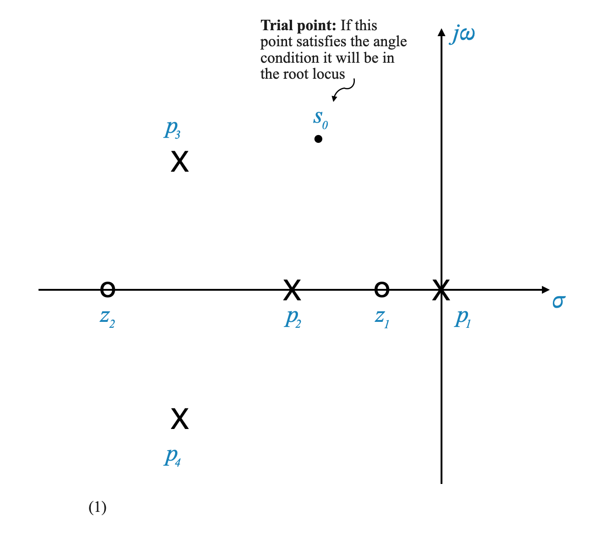
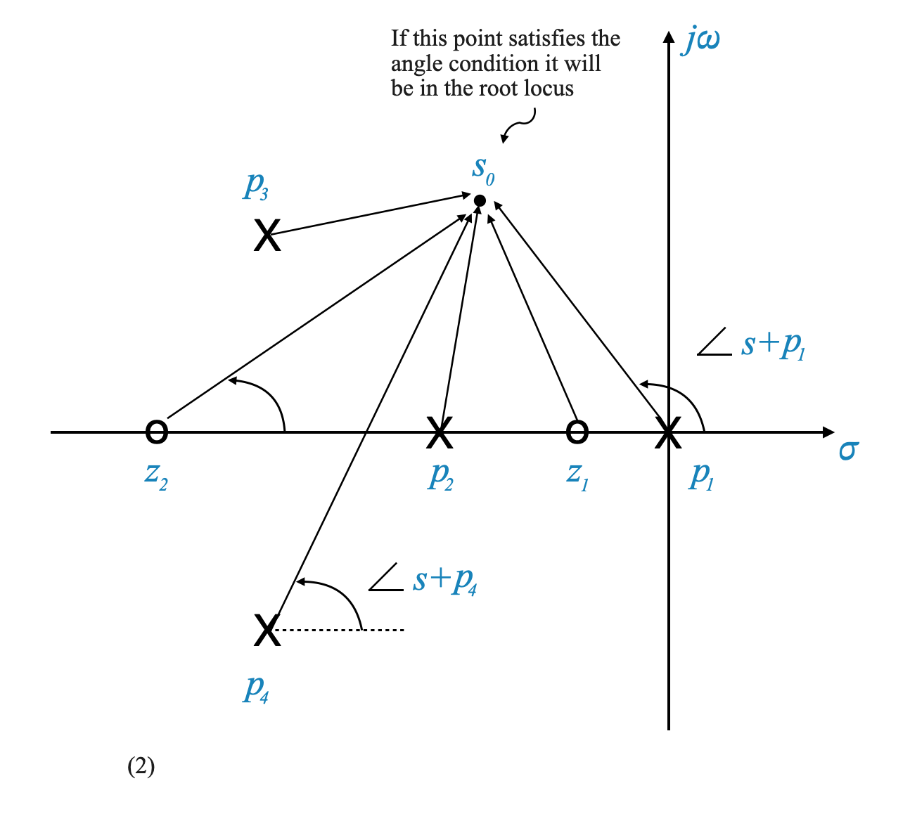
Computer-Aided Graphing: While the brute force method is effective, it’s also time-consuming. Fortunately, computer-aided design tools can automate this process, quickly generating a root locus plot. These tools can handle the complex calculations and graphical representations, making the design process much more efficient.
Using Guidelines: There are certain guidelines that can help us quickly identify potential points on the s-plane for the angle criterion. These guidelines won’t give you the complete root locus plot instantly but will guide you close to the actual points. This approach, combined with rough sketches, can be very informative for initial design considerations.
The Role of Computers in Design: Modern software has greatly simplified these processes. By inputting different values of system parameters like $ $ or $ K $, the software can instantly provide a root locus plot. This visualization aids significantly in making informed design decisions.
While understanding the theory behind root locus plots is important, today’s computer tools greatly assist in the practical aspects of design. Our goal is to blend theoretical knowledge with practical skills to efficiently design control systems.
Should you encounter any challenges with the calculations, remember that they can be extensive and are not expected to be done manually, especially in an examination setting. We have access to computers that can perform these complex calculations for us. Our goal here is to grasp the qualitative aspects of design methods in control engineering.
Here’s the key point: this notebook provide the basic guidelines to create a rough sketch of the root locus. This sketch, even though approximate, is very useful. It helps you make fundamental decisions about the control system design without delving into complex calculations. For instance, based on this rough sketch, you can decide whether to use a Proportional-Integral (PI) controller, a Proportional-Derivative (PD) controller, or a Proportional-Integral-Derivative (PID) controller, among other options. This initial decision-making, guided by a basic understanding of the root locus plot, can be done even before you use a computer for detailed analysis.
How to sketch the Root Locus: Drawing Rules
Rule 1: Symmetry Rule
The root locus plot must be symmetrical with respect to the real axis. This symmetry is due to the fact that in any real system, complex roots occur in conjugate pairs, resulting in real coefficients for the characteristic equation.
If you accurately construct one half of the root locus (above the real axis), the other half (below the real axis) is its mirror image. This symmetry simplifies the plotting process.
Rule 2: Root Locus Branches
The root locus branches start at the open-loop poles of the function $ F(s) $ (where $ K = 0 $) and end at the open-loop zeros of $ F(s) $ or at infinity (where \(K = \infty\)).
The number of root locus branches equals \(n\), the number of open-loop poles of $ F(s) $. Terminal points of these branches are either the zeros of $ F(s) $ or points at infinity.
This means that \(m\) branches end at the zeros of \(F(s)\), and \((n-m)\) terminate at infinity.
Rule 3: Real Axis Segments
To determine if a segment on the real axis is part of the root locus, count the number of poles and zeros to the right of any point on that segment. If the count is odd, the segment is part of the root locus.
This rule helps quickly identify segments of the real axis that belong to the root locus. For example, if there’s one pole to the right of a point and no zeros, the segment to the left of this point is part of the root locus.
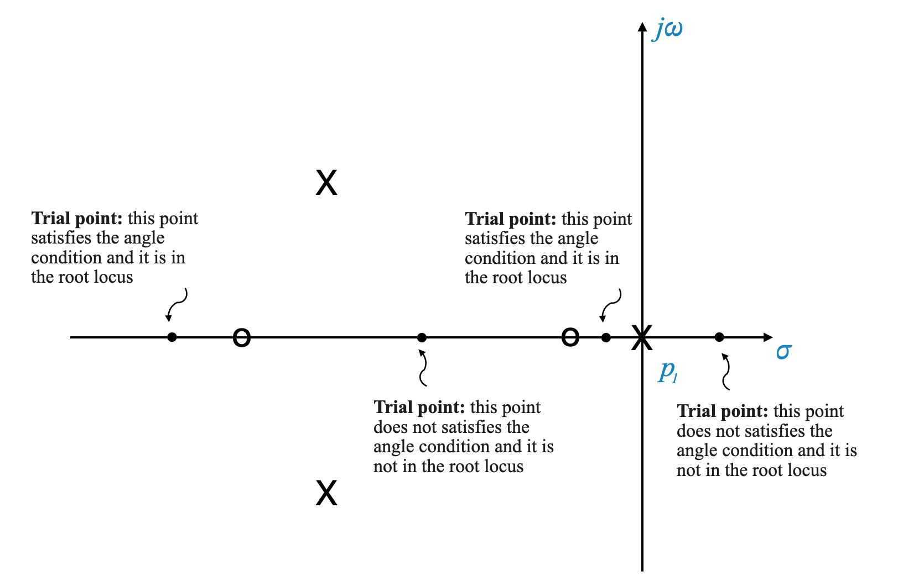
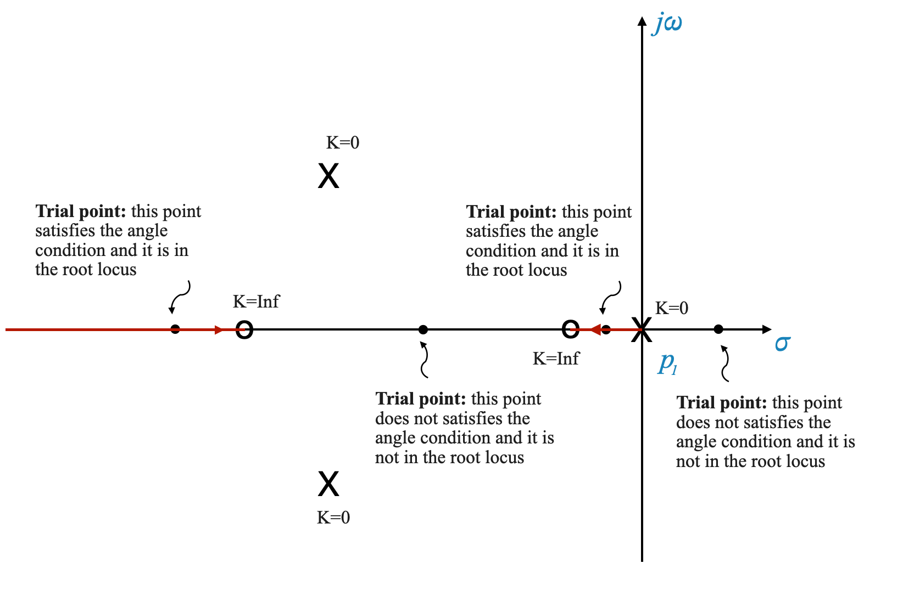
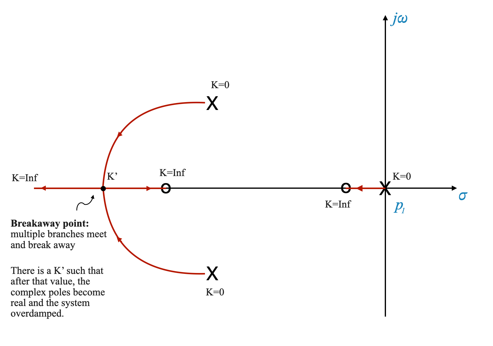
Starting Points: In this example, we begin with three points where $ K = 0 $. These points are the starting points of our root locus branches. Remember, the root locus starts at the open-loop poles of the system, which are represented by these points.
Terminal Points: For each branch, there’s a terminal point where $ K $ approaches infinity. In our sketch, there are three such terminal points corresponding to each branch.
Understanding Branches: One of the branches in this plot extends from a starting point (where $ K = 0 $) to a terminal point (where $ K = $). This shows a complete root locus branch. However, it’s important to note that this segment of the plot represents just one branch of the entire root locus.
Segment on the Root Locus: While the left most segment of this root locus is part of the root locus plot, it doesn’t necessarily constitute a single, independent branch. The root locus plot is a combination of all such segments, and each segment is defined by where it starts and ends in terms of the gain $ K $.
Completeness of the Branch: The completion of this branch from $ K = 0 $ to $ K = $ suggests that it’s a full representation of how one of the system’s poles moves in the complex plane as $ K $ varies. However, to fully validate this branch, we would apply additional rules of the root locus method, which will be discussed later.
We will see how complete the diagram as we go through the rest of the rules.
Rule 4: Asymptote Directions
Understanding Asymptote Directions
For a system with $ n $ poles and $ m $ zeros, $ n - m $ branches of the root locus go to infinity. The directions in which these branches approach infinity are determined by a specific formula.
The Formula
The formula for the direction of asymptotes is given by:
This formula provides the angles at which the root locus branches approach infinity. It helps in sketching the asymptotic behavior of the root locus plot.
Rule 5: Centroid of Asymptotes
The centroid of asymptotes is a crucial point on the real axis from which the asymptotes’ directions are measured. It’s calculated as:
\[
\sigma_A = \frac{\sum \text{real parts of poles} - \sum \text{real parts of zeros}}{n - m}
\]
This is the point on the real axis where all asymptotes come together.
Applying the Rules: An Example
Let’s apply these rules to the transfer function
\[ F(s) = \frac{K}{s(s+1)(s+2)} \]
Here, $ n = 3 $ and $ m = 0 $.
No finite zeros, so all branches will go to infinity.
We find angles at \(\Phi_A=\) 60°, 180°, and 240°.
Determining the Centroid:
The centroid $ _A $ is calculated as:
\[
\sigma_A = \frac{\sum \text{real parts of poles} - \sum \text{real parts of zeros}}{n - m} = \frac{0-1-2}{3} = -1
\]
Using the information we have for now, we can start sketching the root locus:
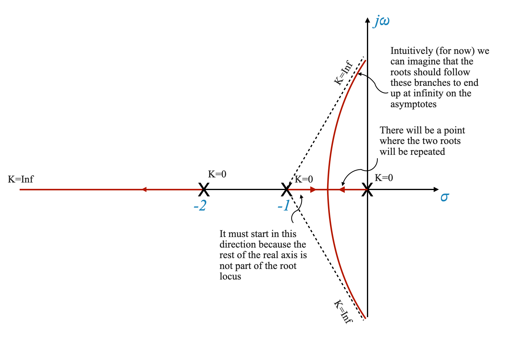
Rule 6: Breakaway point
Concept of Breakaway Points
Breakaway points on the root locus are critical locations where multiple root branches converge or diverge on the real axis.
Defining the Breakaway Point
At a breakaway point on the real axis, the value of the control gain \(K\) is at its maximum relative to that segment (see for example, the plot above). As \(K\) increases beyond this point, the roots become complex conjugates.
Calculating Breakaway Points
Using this intruitive understanding of a breakaway point that maximises the value of \(K\), to find a breakaway point, we use the condition:
\[
\frac{dK}{ds} = 0
\]
This condition represents the extremization of $ K $ with respect to $ s $.
This process involves differentiating $ K $ as a function of $ s $, obtained from the characteristic equation of the system. We then solve for $ s $ where this derivative equals zero.
We use the expression of \(K\) from the equation:
\[
1+ K \frac{\prod_{i=1}^{m} (s + z_i) }{ \prod_{j=1}^{n} (s + p_j)} = 0
\]
Applying the Concept
Consider again our example:
\[ 1+F(s) = 1+\frac{K}{s(s+1)(s+2)} = 0\]
We’ll derive $ K $ as a function of $ s $ and find its derivative:
The root locus starts at the poles $ s = 0, -4 $ and the complex conjugate poles are \(s = -2\pm j4\).
Finding Breakaway Points
Identifying Candidates: Solve $ = 0 $ for the given $ F(s) $ to identify potential breakaway points.
Validating Candidates: Check each candidate against the angle criterion to confirm if it’s a valid breakaway point.
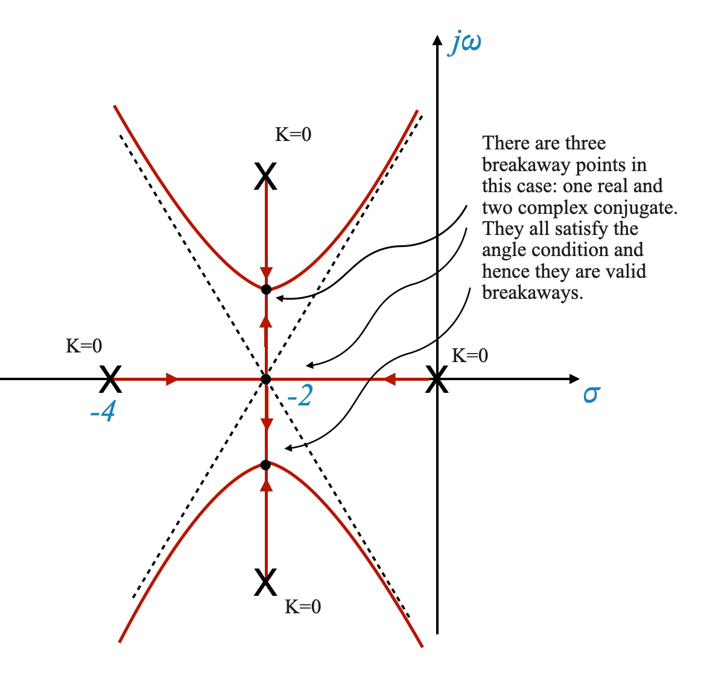
This example shows that breakaway points are not always on the real axis. Complex breakaway points occur, especially in systems with complex poles or zeros.
Often, breakaway points exhibit symmetry, especially in systems with symmetric pole-zero configurations.
Another, simpler, example with breakaway points is:
\[
1 + F(s) = 1 + \frac{Ks}{s^2 + 2s + 2}
\]
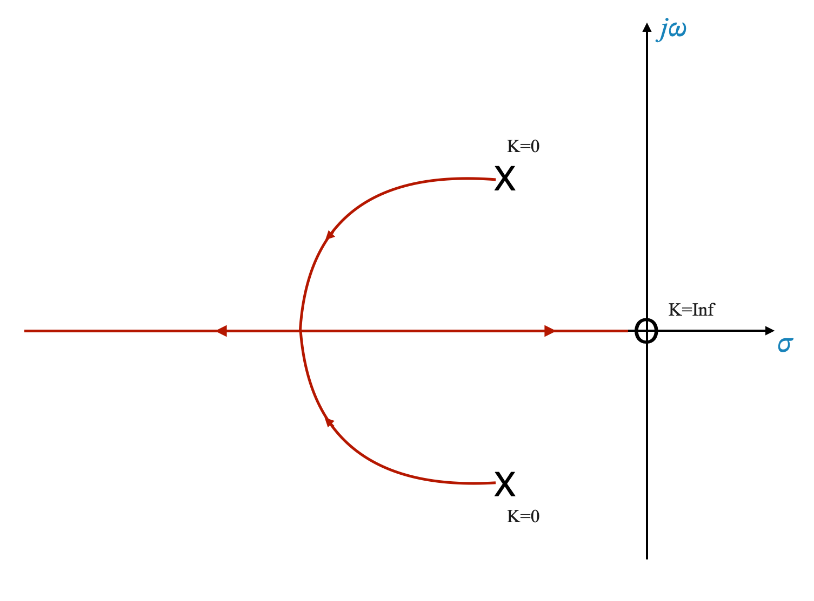
Again, the breakaway point satisfies \(\frac{dK}{ds} = 0\) and the angle condition.
Note: breakway points are called breakin points when the roots are coming together.
Roots Breakaway Angles
When analyzing root locus plots, an important concept is the angle at which roots break away from the real axis. This angle, denoted as $ $, is determined by the formula:
\[
\phi = \frac{180^\circ}{r}
\]
Here, $ r $ represents the number of branches meeting at the breakaway point. For instance, if two branches meet, the breakaway angle is $ 90^$.
To find the breakaway points, we solve the equation derived from setting the derivative of $ K $ with respect to $ s $ to zero, i.e., $ = 0 $. Among the solutions, only those that satisfy the angle condition are considered valid breakaway points.
In our case, we find:
\[
\phi = \frac{180^\circ}{4} = 45^\circ
\]
This implies that, for this particular transfer function, the roots break away at an angle of $ 45^$.
Root Locus Plot
The following script can be used to visualize the root locus plot for this transfer function, illustrating the breakaway points and their corresponding angles.
import numpy as npimport matplotlib.pyplot as pltimport control as ctls = ctl.tf('s')G_modified =1/ (s * (s +4) * (s**2+4*s +8))# Plot root locus for the modified transfer functionplt.figure()ctl.root_locus(G_modified, plot=True)plt.title("Root Locus of Modified Transfer Function")plt.show()# Go deeper and see what happens when you # modify the transfer function to change the root locus once more.# Original transfer function# s = ctl.tf('s')# G_original = 1 / (s * (s + 4) * (s**2 + 4*s + 20))# # Plot root locus for the original transfer function# plt.figure()# ctl.root_locus(G_original, Plot=True)# plt.title("Root Locus of Original Transfer Function")# Let's change the quadratic term to s^2 + 6s + 25# G_modified = 1 / (s * (s + 4) * (s**2 + 6*s + 25))
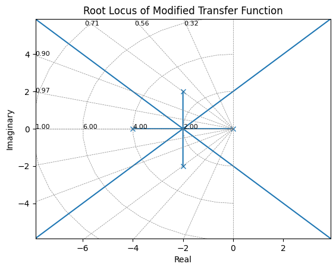
Questions
Pop-up Question: Why is the root locus plot symmetrical about the real axis?
Answer: The symmetry is due to the complex conjugate nature of roots in real systems. For every complex pole or zero, there is a conjugate counterpart, resulting in symmetric plots.
Pop-up Question: How does the number of poles and zeros affect the number of branches in the root locus plot?
Answer: The number of branches in the root locus plot is equal to the number of open-loop poles of the system. The branches start at these poles and move towards the zeros or towards infinity.
Pop-up Question: Why do we need to know the asymptote directions in root locus analysis?
Answer: Knowing the asymptote directions helps predict how the root locus branches behave as they move towards infinity, which is crucial for understanding system stability and design.
Pop-up Question: How does the centroid location affect the root locus plot?
Answer: The centroid is the starting point for the asymptotes on the real axis. Its position influences how the root locus branches diverge towards infinity, impacting the overall shape of the plot.
Pop-up Question: How do breakaway points affect the stability of a control system?
Answer: Breakaway points indicate where roots of the system (poles of the closed-loop transfer function) transition from real to complex or vice versa, affecting the system’s stability and oscillatory behavior.
Pop-up Question: Can breakaway points occur off the real axis?
Answer: Yes, especially in systems with complex poles or zeros, breakaway points can occur off the real axis, indicating a transition in the root trajectory.
Pop-up Question: Why is the maximum value of $ K $ significant at breakaway points?
Answer: The maximum value of $ K $ at a breakaway point signifies the transition from real to complex conjugate roots (or vice versa), marking a critical change in system dynamics.
Pop-up Question: How do we determine which solutions for breakaway points are valid?
Answer: After calculating potential breakaway points, we must check each one against the angle criterion. Only those satisfying this criterion are valid breakaway points.
Summary
Here’s a summary of the root locus rules covered so far:
Symmetry Rule: The root locus plot is always symmetrical about the real axis. This symmetry arises because complex poles or zeros in polynomial equations with real coefficients occur in conjugate pairs.
Root Locus Branches - Starting and Ending Points:
Root locus branches start at the open-loop poles (where the gain $ K = 0 $).
They end at the open-loop zeros or go to infinity if there are fewer zeros than poles.
Real Axis Segmentss: A segment on the real axis is a part of the root locus if the total number of poles and zeros to the right of any point on that segment is odd.
Asymptote Directions: When the number of poles is greater than the number of zeros, root locus branches go to infinity along asymptotes. The directions of these asymptotes are given by $ = (2q + 1) $, where $ q $ varies from 0 to $ n - m - 1 $.
Centroid of Asymptotes: The point on the real axis from which asymptotes emanate (the centroid) is calculated using the formula: $ _A = $.
Breakaway and Break-in Points: These points on the root locus are where branches diverge from or converge to the real axis. They can be found by solving $ = 0 $ for $ s $ and selecting the points that satisfy the angle criterion.
Breakaway Angles: The angle at which branches break away from or converge to the real axis is $ = $, where $ r $ is the number of branches meeting at the point.
Rule 7: The Angle of Departure and Arrival
The angle of departure from a complex pole and the angle of arrival at a complex zero are important to understand how the root locus branches behave near these points.
Angle of Departure from a Complex Pole
Rule for Angle of Departure: The angle at which a root locus departs from a complex pole is determined by the sum of angle contributions from all other poles and zeros to this pole, minus 180 degrees multiplied by (2q + 1), where q is an integer.
Example Explanation: Consider a system with two poles and one zero. The root locus sketch shows the trajectory of the system poles as the gain \(K\) varies. As \(K\) increases from 0, the poles move along the root locus path, eventually breaking away from the real axis. The direction in which they break away (the angle of departure) is essential for understanding system behavior.
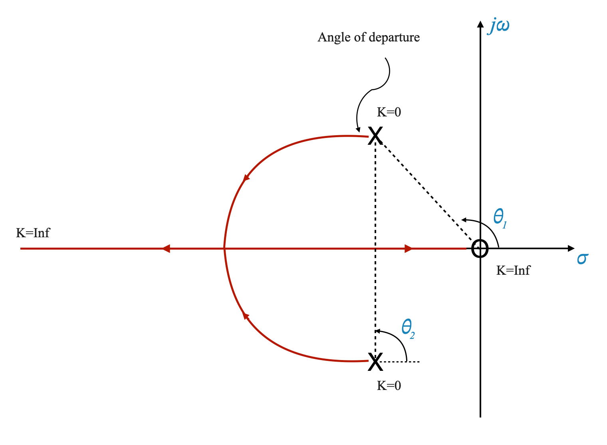
Steps for Angle of Departure: 1. Identify the complex pole of interest. 2. Calculate the angle contribution, \(\theta_1\), due to the zero and \(\theta_2\) due to the other pole. 3. The net angle contribution at this pole is \(\theta_1 - \theta_2\) (zero contribution is positive, and of poles is negative). 4. The angle of departure \(\phi_p\) is given by the formula: \(\phi_p = \pm 180^\circ \times (2q + 1) + \phi\), where \(\phi_p\) is the net angle contribution.
For example, in the case below, look at the departure angle due to the contribution of all zeros and poles:
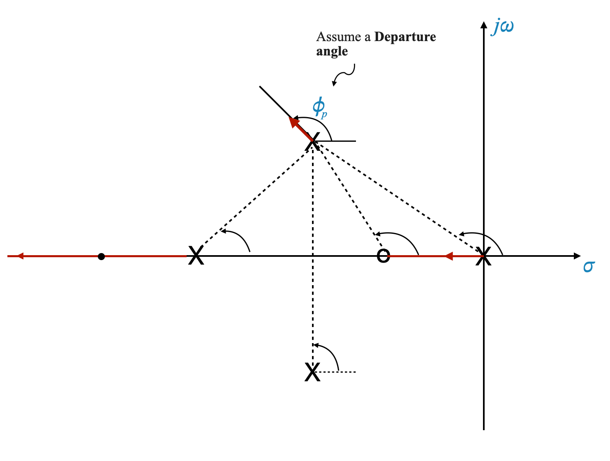
Angle of Arrival at a Complex Zero
Rule for Angle of Arrival: The angle at which a root locus arrives at a complex zero is determined similarly, considering the sum of angle contributions from all other poles and zeros to this zero.
Steps for Angle of Arrival: 1. Identify the complex zero of interest. 2. Calculate the total angle contribution, \(\phi_z\), from all poles and zeros to this zero. 3. The angle of arrival is given by \(\phi_z = \pm 180^\circ \times (2q + 1) - \phi\).
For example:
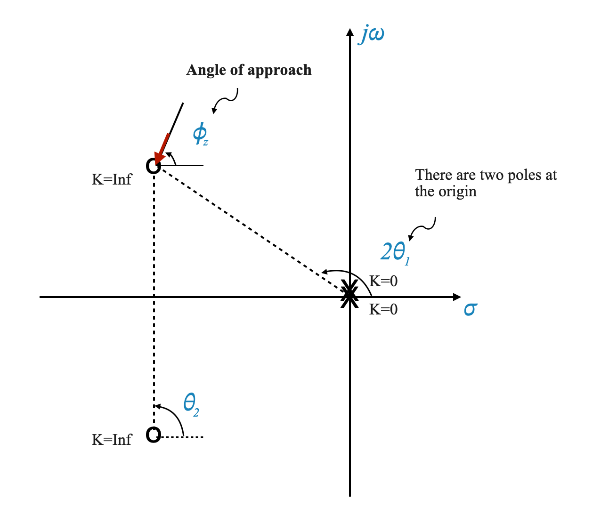
And the angle of approach to the zero is \(\phi_z = 180^\circ - (\theta_2 - 2\theta_1)\)
Rule 8: Routh-Hurwitz Criterion and Imaginary Axis Intersection
Let’s consider once again:
\[ 1+F(s) = 1+\frac{K}{s(s+1)(s+2)} = 0\]
We determined the following root locus plot:
The last rule we will discuss involves using the Routh-Hurwitz criterion to determine the point at which the root locus intersects the imaginary axis.
Steps to Use Routh-Hurwitz Criterion: 1. Form the characteristic equation of the system. 2. Construct the Routh array. 3. Identify the condition for which a row of the Routh array becomes zero. 4. Use this condition to find the value of \(K\) at which the root locus intersects the imaginary axis.
Example:
Consider a system with the characteristic equation \[ G(s) = \frac{K}{s(s+1)(s+2)} \]
The characteristic equation is:
\[s^3 +3s^2 +2s+K=0\]
To construct the Routh array for the equation $ s^3 + 3s^2 + 2s + K = 0 $, we need to organize the coefficients of the polynomial in a tabular format. The Routh array helps us determine the number of roots with positive real parts, which makes it possible to understand the stability of the system.
Here’s how to construct the Routh array for the given polynomial:
Arrange the Coefficients: Start by writing down the coefficients of the polynomial in descending powers of $ s $.
First Two Rows: Place the coefficients of even powers of $ s $ in the first row and those of odd powers of $ s $ in the second row.
Subsequent Rows: Compute each element of the lower rows using the formula: \[
R_{i,j} = -\frac{1}{R_{i-1,1}} \left( R_{i-1,1}R_{i-2,j+1} - R_{i-2,1}R_{i-1,j+1} \right)
\] where $ R_{i,j} $ is the element in the $ i $-th row and $ j $-th column.
Completing the Array: Continue this process until you have filled the array. If any row starts with zero, special techniques like polynomial division or using a small positive number (ε) are used to proceed.
For the given polynomial $ s^3 + 3s^2 + 2s + K = 0 $, the Routh array will be:
$ s^3 $
\(1\)
\(2\)
$ s^2 $
\(3\)
\(K\)
$ s^1 $
$ $
\(0\)
$ s^0 $
\(K\)
The first column of the Routh array indicates the number of roots with positive real parts. If there’s a sign change in this column, it indicates a root with a positive real part, implying instability in the system.
The stability of the system depends on the value of $ K $. For the system to be stable, all elements in the first column must be positive. Therefore, the conditions for stability can be derived by ensuring positive values in this column.
Determining Stability Conditions
From the third row, we have $ $. For stability, this term must be positive, leading to the condition:
\[ K < 6 \]
And from the last row, since it’s just $ K $, for stability, we must also have:
\[ K > 0 \]
Therefore, the system is stable for:
\[ 0 < K < 6 \]
When the gain factor $ K $ is set to 6, we encounter a special situation in the Routh array. Specifically, the row corresponding to $ s^1 $ becomes all zeros. This occurrence is significant because it indicates a certain condition in control systems analysis.
Understanding the Auxiliary Polynomial
The concept of an auxiliary polynomial comes into play here. It is derived from the row just above the all-zero row in the Routh array. In our case, since the $ s^1 $ row is all zeros, we look at the $ s^2 $ row.
From the $ s^2 $ row, the auxiliary polynomial is formed as follows:
\[ 3s^2 + K \]
Setting $ K = 6 $, as per our special case, the polynomial becomes:
\[ 3s^2 + 6 = 0 \]
Finding the Roots
The roots of this auxiliary polynomial are also the roots of the original characteristic equation at $ K = 6 $. Let’s solve this equation:
Starting with:
\[ 3s^2 + 6 = 0 \]
We simplify it to:
\[ s^2 + 2 = 0 \]
To find the roots $ s_{1,2} $, we solve for $ s $:
\[ s_{1,2} = \pm j\sqrt{2} \]
These are complex roots, where $ j $ represents the imaginary unit.
Visualizing on the Root Locus Diagram
With these roots, we can now update our root locus diagram. These points, $ j $, represent the intersections of the root locus with the imaginary axis. Adding these intersections allows us to complete the rough sketch of the root locus diagram.
Diagram showing the root locus plot with the intersections at $ j $.
This step is important in control system design as it helps us visualize how the system poles move in the complex plane, especially as the gain $ K $ changes. The intersection points with the imaginary axis provide valuable insights into system stability at specific gain values.
Example 1
In this part, we focus on a comprehensive example to understand the application of the root locus method.
Consider a unity-feedback system with an open-loop transfer function given by:
\[ G(s) = K \cdot \frac{1}{s(s+3)(s^2+2s+2)} \]
Our objective is to apply the root locus rules to this transfer function and analyze the resulting root locus plot.
Step 1: Identifying Open-Loop Poles and Zeros
First, we need to identify the open-loop poles and zeros of the system. For our given transfer function, the poles are at:
$ s = 0 $
$ s = -3 $
The roots of $ s^2 + 2s + 2 $, which are complex: $ s = -1 j $
Step 2: Sketching the Pole-Zero Diagram
Next, we plot these poles and zeros on the complex $ s $-plane. This helps us visualize the starting points of our root locus.
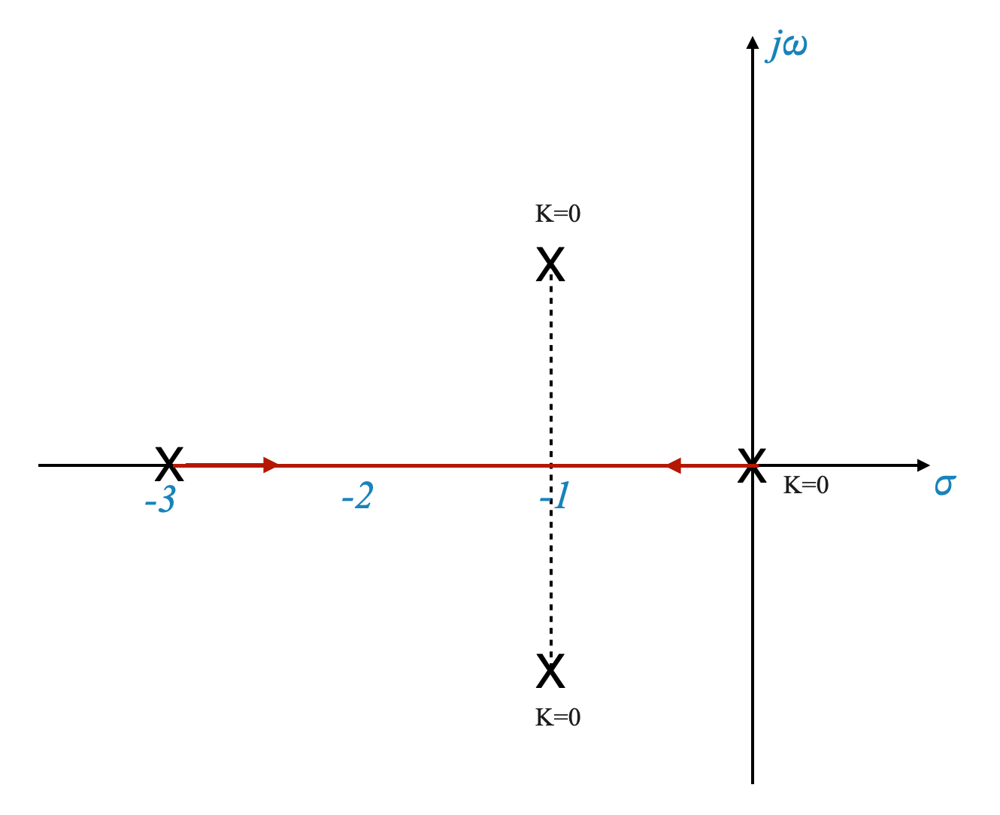
We can obtain the diagram above in python:
# Import necessary librariesimport numpy as npimport matplotlib.pyplot as pltdef plot_pole_zero_diagram(poles, zeros):""" Plots the pole-zero diagram. Parameters: poles (list): List of complex numbers representing poles. zeros (list): List of complex numbers representing zeros. """# Setting up the plot plt.figure(figsize=(8, 6)) plt.axhline(y=0, color='k') # Horizontal axis plt.axvline(x=0, color='k') # Vertical axis plt.grid(True, which='both')# Plot poles as 'x' and zeros as 'o'for pole in poles: plt.plot(np.real(pole), np.imag(pole), 'rx', markersize=10) # Polesfor zero in zeros: plt.plot(np.real(zero), np.imag(zero), 'bo', markersize=10) # Zeros plt.title('Pole-Zero Diagram') plt.xlabel('Real') plt.ylabel('Imaginary') plt.show()# Define poles and zeros for the example transfer functionpoles = [0, -3, complex(-1, 1), complex(-1, -1)] # s=0, s=-3, s=-1±jzeros = [] # No zeros in this example# Call the function to plot the diagramplot_pole_zero_diagram(poles, zeros)
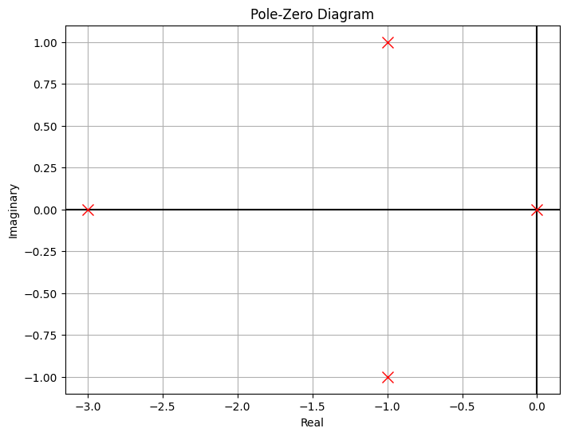
Step 3: Determining the Root Locus Branches
Since there are four poles and no zeros, we expect four root locus branches starting at each pole. The branches will originate from these poles as the gain $ K $ varies from 0 to infinity.
Pop-up Question: Why do we expect four root locus branches in this case?
Answer: The number of root locus branches equals the number of open-loop poles. Here, we have four poles, hence four branches.
Step 4: Calculating the Departure Angles (\(\phi_p\))
The direction in which the root locus departs from complex poles is important. This is determined by the angle of departure, calculated using the formula:
\[ \phi_p = \pm 180^\circ - (\text{sum of angles due to other poles and zeros}) \]
Example Calculation: For our complex poles at $ s = -1 j $, we calculate the angles due to other poles and apply the formula to find $ _p $.
To calculate the angle of departure \(\phi_p\) for the pole at \(-1 + j\) for our example transfer function, we need to follow these steps:
Identify the Pole and Other Elements: We are focusing on the pole at \(-1 + j\). The other elements in the system include the poles at \(0\), \(-3\), and \(-1 - j\). There are no zeros in this system.
Calculate Angle Contributions: The angle contribution of each pole/zero to the pole at \(-1 + j\) is calculated by the angle of the vector from each pole/zero to the pole at \(-1 + j\).
Sum the Angles: Sum these angle contributions, keeping in mind that the angles due to poles are subtracted (as they are in the denominator of the transfer function).
Apply the Formula: Use the formula \(\phi_p = \pm 180^\circ - (\text{sum of angles due to other poles and zeros})\).
Let’s calculate this step by step:
Step 1: Identifying Poles
Poles: \(0, -3, -1 - j\)
Pole of Interest: \(-1 + j\)
Step 2: Calculating Angle Contributions
For each pole \(s_i\), the angle \(\theta_i\) made with the pole of interest \(-1 + j\) is calculated as follows:
So, both calculations lead to the same angle of departure, \(-71.57^\circ\). This is the angle at which the root locus will depart from the complex pole at \(-1 + j\).
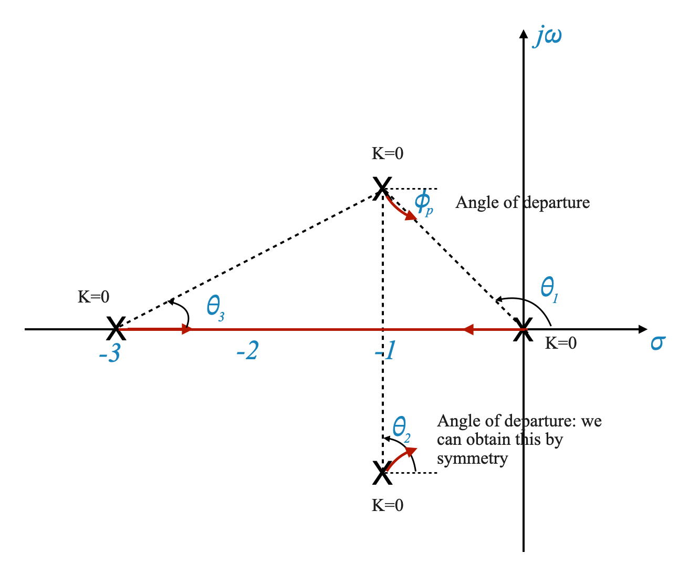
Step 5: Asymptotes and Centroid
The asymptotes provide a rough idea of the directions in which the root locus branches will tend. We calculate the angles of asymptotes (φA) and the centroid (σA) using:
\[ \sigma_A = \frac{\text{sum of real parts of poles - sum of real parts of zeros}}{n-m} = -1.25 \]
Where $ n $ is the number of poles, $ m $ the number of zeros, and $ q $ varies from 0 to $ n-m-1 = 3$.
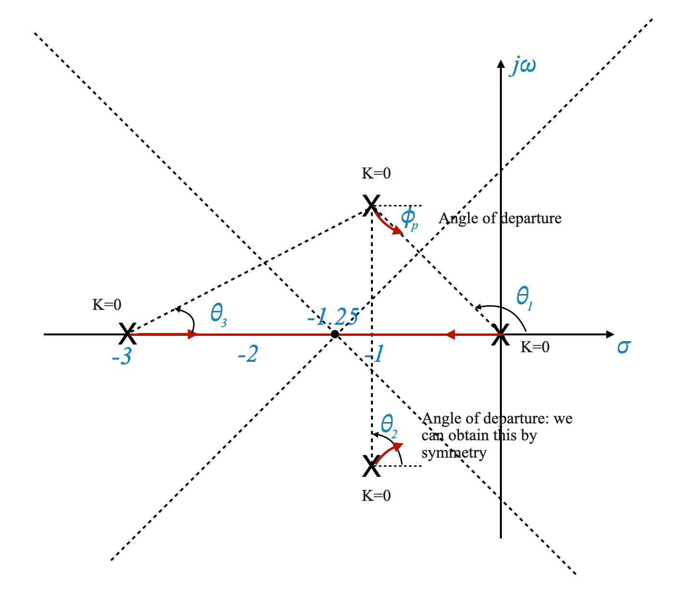
Pop-up Question: What does the centroid represent in the root locus plot?
Answer: The centroid represents the average location of the asymptotes on the real axis, providing a central reference point for the direction of the root locus branches.
Step 6: Breakaway Points
Breakaway points are where root locus branches move away from the real axis. We calculate these using the condition:
\[ \frac{dK}{ds} = 0 \]
Where $ K $ is the open-loop gain.
Find the Open-Loop Transfer Function:
The given open-loop transfer function is $ 1+F(s) = 1+ $.
Express $ K $ in terms of $ s $:
Rewrite $ F(s) $ so that $ K = -s(s+3)(s^2+2s+2) = -(s4+5s3+8s^2+6s)$.
Differentiate $ K $ with Respect to $ s $:
Calculate $ $. This gives:
\[
\frac{dK}{ds} = -4(s^3+3.75s^2+4s+1.5)
\]
Solve for $ s $ where $ = 0 $:
This step requires finding the roots of the derivative equation.
Solving this equation will give us the potential breakaway points.
This is a cubic polynomial in $ s $, and its roots can be the potential breakaway points. Solving this equation analytically can be complex, so it’s often solved using numerical methods or computational tools like MATLAB or Python.
We can also attempt to find the solution manually, using the initial sketch of the root locus. From that sketch we see that a breakaway point must lie between 0 and -3 on the real axis. By trial-and-error procedure, we can find that \(s=-2.3\) satisfies the equation to a reasonable accuracy.
Identifying Valid Breakaway Points:
After solving the cubic equation, not all roots will be valid breakaway points. The valid breakaway points must: - Lie on the real axis. - Be within the range of the open-loop poles and zeros on the real axis. - Satisfy the angle criterion of the root locus.
Intersections with the imaginary axis
The points where the root locus intersects the imaginary axis are critical in understanding the system’s oscillatory behavior. These can be determined using the Routh-Hurwitz criterion.
Applying Routh-Hurwitz Criterion: For this system, the intersection points are found to be at \(\pm 1.1\) and the corresponding gain value \(K = 8.16\).
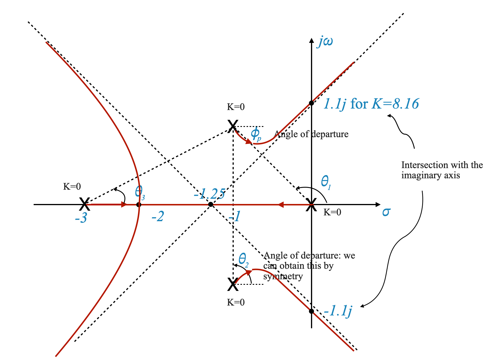
Understanding the Root Locus Sketch
When analyzing control systems using the root locus method, it’s important to distinguish between qualitative and quantitative analysis. This distinction is crucial for both creating and interpreting root locus plots.
Qualitative Analysis of Root Locus
The root locus sketch we create initially is a qualitative representation. It gives us a visual understanding of how the system’s poles move in the complex plane as the gain, \(K\), varies. This qualitative sketch is valuable for grasping the general behavior of the system, such as:
Identifying the paths along which poles move.
Understanding the system’s stability changes with varying gain.
Observing the tendency of poles to converge or diverge.
Note: Remember, this sketch is qualitative. It provides a visual guide to the system’s behavior but does not offer precise numerical values or exact locations of the poles, except for those few points we have explicitly calculated.
Importance of Quantitative Information
While a qualitative sketch is helpful for a general understanding, obtaining quantitative information is crucial for detailed analysis and design. This involves:
Precise pole locations for specific gain values.
Exact values of gain where system behavior changes (like crossing the imaginary axis).
Detailed stability margins and performance criteria.
The Role of the Angle Condition
To derive quantitative information, we rely on the angle condition, a fundamental part of the root locus method. The angle condition helps us determine:
The exact points on the root locus that satisfy the angle criterion, providing us with specific pole locations for given gain values.
The verification of whether a point lies on the root locus or not.
Applying the angle condition involves calculating the sum of phase angles contributed by all poles and zeros to a point in the complex plane and ensuring that this sum equals an odd multiple of 180 degrees.
Design Problem - Adjusting Gain for Desired Damping
A common design problem in control systems is adjusting the gain, $ K $, to achieve a desired level of damping, denoted as $ $. Let’s say we aim for a damping ratio of 0.5.
Drawing the Damping Line: We draw a line corresponding to $ = 0.5 $ in the $ s $-plane to find where it intersects the root locus.
\[
\theta = \cos^{-1}(\zeta) = 60^o
\]
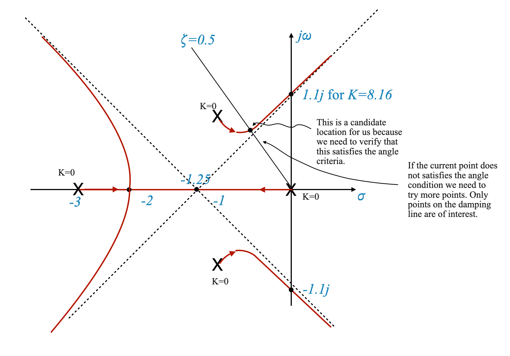
Finding the Suitable Gain Value: Once we find the intersection point, we apply the angle criterion to confirm it lies on the root locus. Then, we calculate the corresponding gain, $ K $, using the magnitude criterion.
If the point we try based on our rough sketch does not satisfy the angle condition we try more points to adjust our plot. Keep in mind that only points on the desired damping line are of interest in this case.
Angle Criterion: To confirm if a candidate point is indeed on the root locus, check if the total phase angle contribution from all poles and zeros to this point is an odd multiple of 180 degrees.
Verification: If the angle criterion is satisfied, the point is on the root locus. If not, adjust the sketch to find a valid intersection point along the damping line.
Doing the calculation we obtain an intersection point of:
\[
s = -0.4\pm j0.7
\]
These are the desired closed loop poles of the system.
Calculating the Gain $ K $
Magnitude Criterion: Once a valid intersection point is confirmed, calculate the corresponding gain $ K $ using the magnitude criterion:
\[ K = \left| \frac{\text{Product of distances from selected point to zeros}}{\text{Product of distances from selected point to poles}} \right| \]
and more formally:
\[
K = \frac{\left| \prod_{j=1}^{m} (s + p_j) \right| }{ \left| \prod_{i=1}^{n} (s + z_i) \right|}
\]
For the point $s = -0.4 j0.7 $, we measure the distances to each pole (say $ p_1, p_2, p_3 $) and calculate $ K $:
Assuming we’ve measured these distances and calculated them, $ K $ turns out to be 2.91. Thus, $ K = 2.91 $ is the gain at which the system achieves a damping ratio of 0.5.
Note that you can also calculate the corresponding \(K\) graphically, measuring the distances from the points to the zeros and poles to have a rough number. Divide the product of distances to zeros by the product of distances to poles to find $ K $. Since there are no zeros in this example, the denominator becomes 1.
Additional considerations
We will now focus on finding the remaining closed-loop poles in our fourth-order control system.
We have already identified two poles, but to complete our analysis, we need to locate the other two. This step is crucial for understanding the system’s overall behavior, especially its stability and response characteristics.
The design that we have made only makes sense if the poles that we have identified are dominant, and the other two poles are negligible.
Only in this case in fact, the dominant poles at $s = -0.4 j0.7 $ are representative system’s behavior and hence correspond to having a damping ratio $ = 0.5 $ .
Our goal now is to find these remaining poles to ensure they are indeed non-dominant.
Using the Gain Value: - We have a specific gain value of interest, $ K = 2.91 $, which corresponds to our dominant poles. - Our task is to find points on the other root locus branches that correspond to this same gain value.
Methodology for Locating Poles
Graphical Approach:
By graphically plotting the root locus, we can estimate the location of the poles at $ K = 2.91 $.
This method involves trial and error, adjusting points on the root locus until the magnitude criterion confirms $ K = 2.91 $.
We try a point on the other branches of the plot and we apply the magnitude condition to calculate the value of \(K\) until we find one point that roughly gives us the correct gain.
Magnitude Criterion:
This criterion is used to verify if a point on the root locus corresponds to the desired gain value.
Formula:
\[ K = \frac{ \left| \prod_{j=1}^{n} (s + p_j) \right| }{ \left| \prod_{i=1}^{m} (s + z_i) \right| } \]
Applying these considerations we will that the other two roots when $ K = 2.91 $ are at $ s_3 = -1.4 $ and $ s_4 = -2.85 $ and they are on the real axis.
Note that in this case the dominance condition is not verified because the ratio between 0.4 and 1.4 is about 3 times only (and we want 4 or 5 times).
The actual overshoot will be more than that corresponding to \(\zeta=0.5\). This is due to the fact that the influence of the other poles is not negligible.
We will need to do simulations to understand how the system behaves.
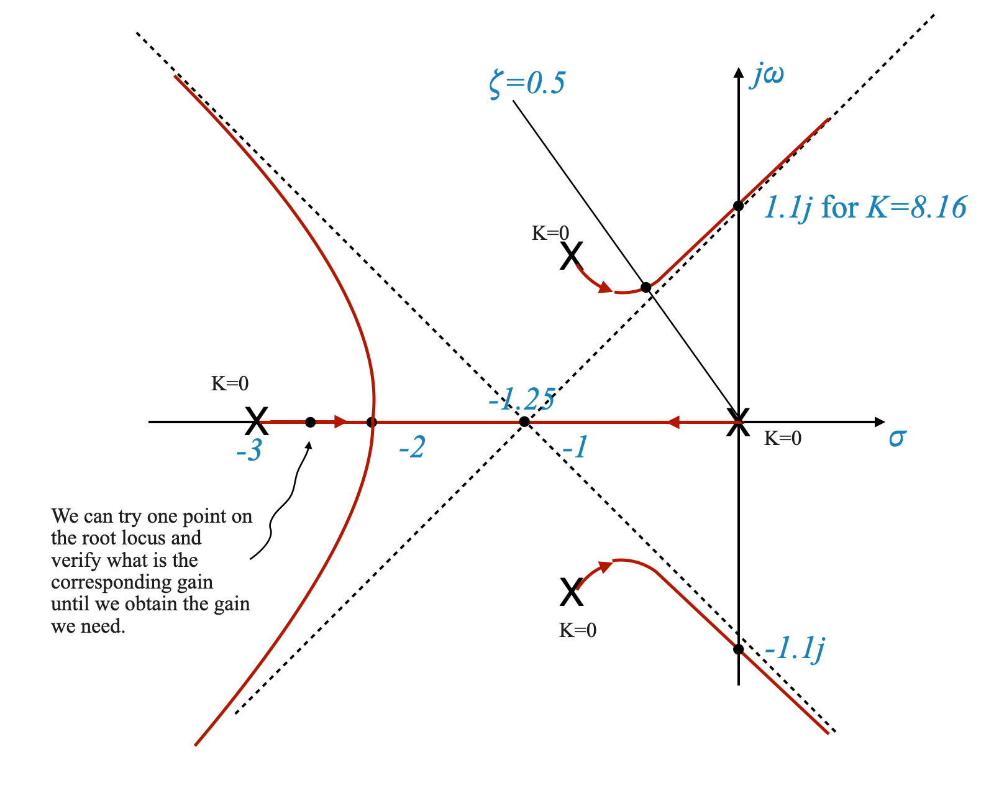
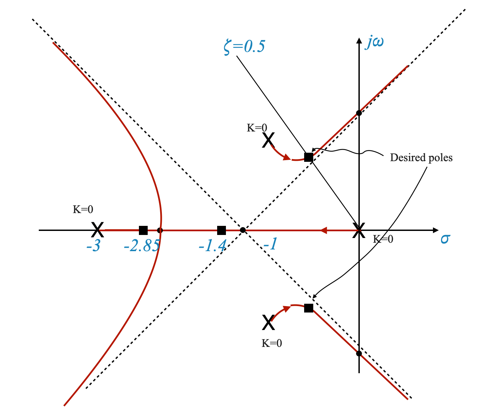
Figure: Left: trial and error until we find the desired value of gain. Right: Final poles obtained as black squares.
To plot the root locus for the system described, we can use Python along with the matplotlib library for plotting and the control library, which provides functions specifically for control systems analysis, including root locus plots.
Below is a Python script to plot the root locus for the given system.
This script sets up the transfer function of your system and then uses the root_locus function from the control library to plot the root locus. The root locus plot will show how the poles of the closed-loop system move in the complex plane as the gain \(K\) varies.
import numpy as npimport matplotlib.pyplot as pltimport control as ctl# Define the transfer functionnumerator = [1]denominator = [1, 5, 8, 6, 0] # s^4 + 5s^3 + 8s^2 + 6ssystem = ctl.TransferFunction(numerator, denominator)# Plot the root locusfig, ax = plt.subplots()rl, k = ctl.root_locus(system, plot=True, ax=ax)# Improve plot aestheticsax.set_title('Root Locus Plot')ax.set_xlabel('Real Axis')ax.set_ylabel('Imaginary Axis')ax.axhline(y=0, color='k', lw=1)ax.axvline(x=0, color='k', lw=1)ax.grid(True, which='both', ls='--', lw=0.5)# Adjust plot limits if necessaryax.set_xlim([-4, 1])ax.set_ylim([-3, 3])plt.show()
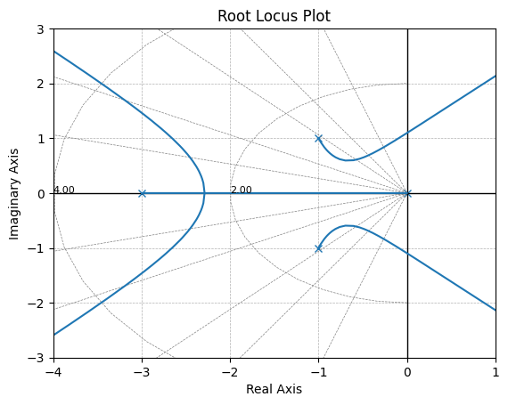
Example 2
In this example, we delve into the application of root locus analysis for designing control systems with multiple parameters. We focus on a specific example involving a position control system with tachometric feedback.
Understanding the System Configuration
Consider a system with an open-loop transfer function of the form:
\[ G(s) = K_A \cdot \frac{s}{s(s+2)} \]
Where $ K_A $ is the amplifier gain. We aim to design this system for a specified value of the damping ratio $ $.
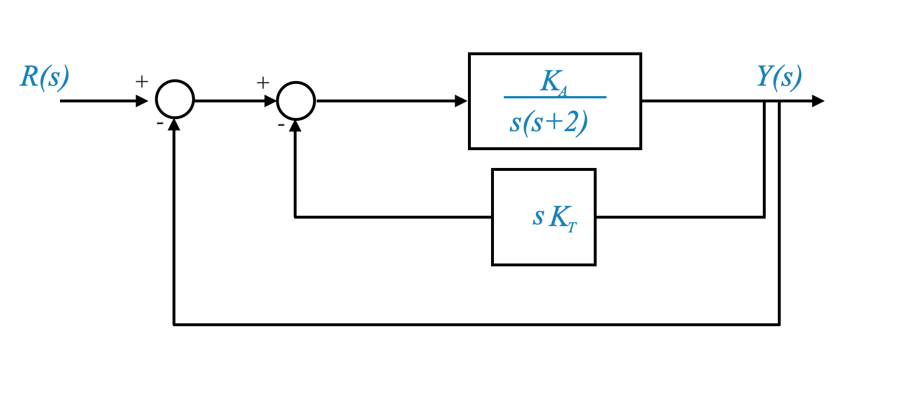
Resolving into a Single Loop Configuration
The first thing we want to do is to convert the system into a single loop configuration:
\[ F(s) = \frac{K_A}{s^2 + (2 + K_A K_T) s} \]
Where $ K_t $ represents the tachometric constant.
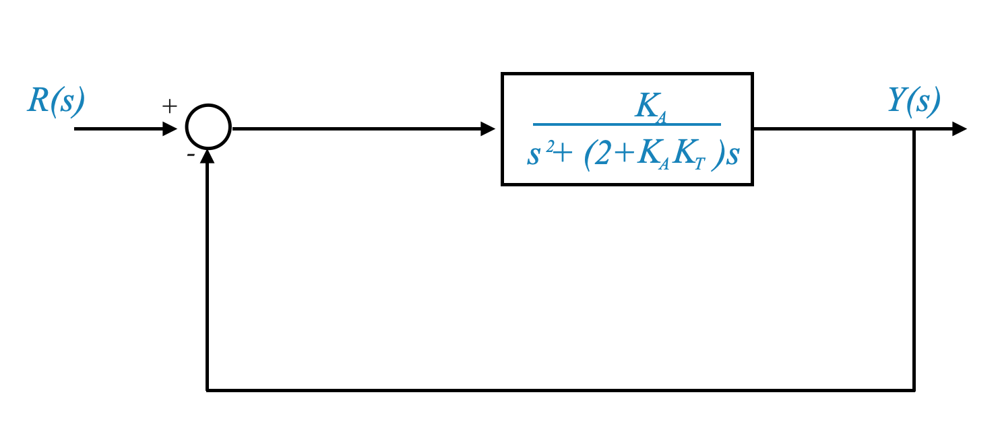
Determining the Characteristic Equation
The characteristic equation for this system is:
\[ s^2 + (2 + K_A K_T) s + K_A = 0 \]
As we discussed poles and zeros of the system might be different from the open-loop ones.
Step 1: Formulating the Root Locus Function
We express the characteristic equation in a form suitable for root locus analysis:
To do this, we can re-write the characteristic equation in this form:
\[ s^2 + 2s + K_A + K_AK_T s = 0 \]
\[ K_A + K_AK_T s = -s^2 - 2s \]
\[ K_AK_T s = -s^2 - 2s -K_A\]
and finally we can write the root locus equation:
\[ 1 + \frac{K_A K_Ts}{s^2 + 2s + K_A} = 0 \]
Here, $ K = K_A K_T $ acts as the root locus gain. If for example I want to understand how \(K_T\) affects my performance I have to have the equation is a way that \(K_T\) is my root locus gain:
\[
1 + KF(s) = 0, \;\;\; K = K_A K_T
\]
Design Problem: Specifying Damping Ratio
Suppose we are given \(K_A=60\) and we want to design \(K_T\) so that the system has a damping ratio $ = 0.5 $.
This specialises our equation:
\[ 1 + \frac{60 K_Ts}{s^2 + 2s + 60} = 0 \]
Step 1: Sketching the Root Locus
The root locus plot helps us visualize how the system poles move as $ K $ varies.
We identify poles, zeros, and the breakaway points on the root locus.
Step 2: Calculating $ K_T $ for Desired Damping
We draw a line in the s-plane corresponding to $ = 0.5 $.
Find the intersection of this line with the root locus to identify the corresponding value of $ K $.
Calculate $ K_T $ from $ K $ using $ K_T = $.
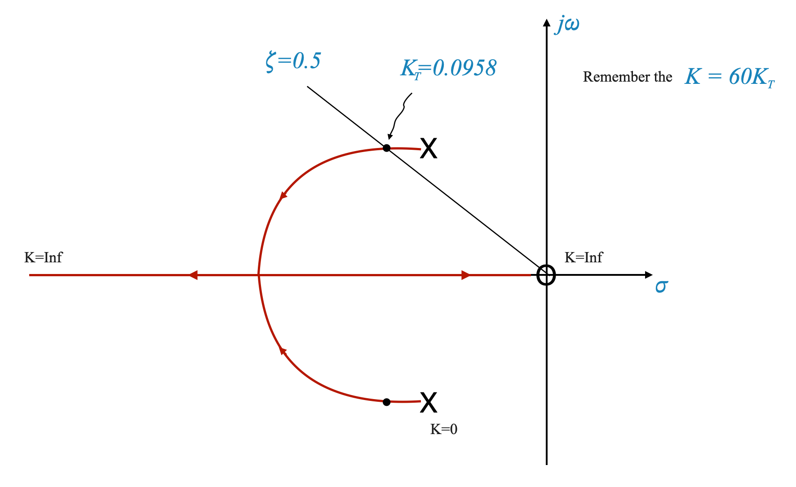
Understanding Root Contours
Root contours represent the root locus plots for various values of one parameter while keeping the other constant. This concept is crucial for systems with multiple varying parameters.
Root Contours for varying $ K_A $
Plotting Root Contours: For each value of $ K_A $, plot the corresponding root locus.
Analysis: Observe how the root locus branches change with different values of $ K_A $.
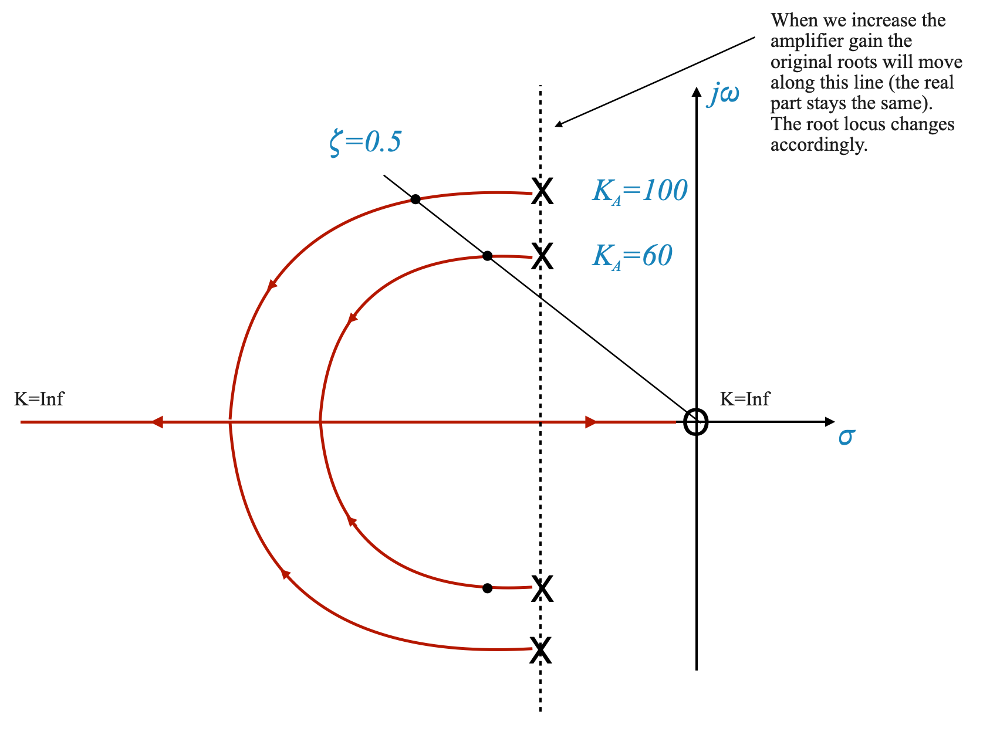
In fact the vertical dashed line in the diagram above is the root locus of the equation:
\[
s^2 + 2s + K_A = 0
\]
If you have multiple parameters like we had before:
\[ 1 + \frac{K_A K_Ts}{s^2 + 2s + K_A} = 0 \]
Concentrate on the denominator, which is a function of only one parameter. The roots of the denominator are the open-loop poles of the total function.
First of all study: \(s^2 + 2s + K_A=0\), including if necessary (and it might be for a complex function) put it in the root locus form:
\[
1 + \frac{K_A}{s(s+2)}
\]
and plot the root locus (which is a vertical line between 0 and -2).
This root locus gives you the open loop poles for the complete function. This means that you can take any two points on this root locus and they represent your open loop poles (for a specific value of your \(K_A\) parameter).
Draw the root locus for the other parameter (\(K_T\) in our case).
Root Locus Analysis for Systems with Dead Time
We deal now with the root locus analysis of control systems that include dead time, a common scenario in real-world applications. We will use the Pade approximation to simplify the dead time element and analyze its impact on the root locus plot.
Understanding Dead Time in Control Systems
Dead time in control systems refers to a delay between the input and output response. It is often represented by a term like $ e^{-s_D} $ in the transfer function, where $ _D $ is the dead time.
Example: Transfer Function with Dead Time
Consider a transfer function with dead time:
\[ G(s) = \frac{K \cdot e^{-s\tau_D} }{ s }\]
Approximating Dead Time: Pade’s Approximation
Dead time can be approximated using Pade’s approximation, which converts the exponential delay into a rational function. The approximation for a first-order Pade is:
Angle Criterion: Modifies due to the negative sign. The criterion changes from an odd multiple of 180 degrees to an even multiple: \[ \angle G(s) = \pm 2q \times 180^\circ \]
This is because the equation is now \(G(s)=1\) (earlier it was \(G(s)=-1\)).
Constructing the Root Locus
Identify Poles and Zeros:
Pole at $ s = 0 $
Zero at $ s = $
Additional pole at $ s = - $ due to Pade’s approximation.
Plotting the Root Locus:
With respect to the rules we saw, there are only two changes: - The real axis segments that are part of the root locus change because of the negative sign. - Use the modified angle criterion to determine which segments of the real axis belong to the root locus.
Plotting the root locus with python
This code generates the root locus plot for a system with dead time, considering the modifications required due to the Pade approximation. It provides a visual representation of how the poles of the system move in the complex plane as the gain \(K\).
import numpy as npimport matplotlib.pyplot as pltimport control as ctrl# Define the system parametersK =-1# Gaintau_D =1# Dead time# Transfer function with Pade's approximation for dead timenumerator = [1, -tau_D/2]denominator = [1, tau_D/2, 0]G_s = ctrl.TransferFunction(K * np.array(numerator), np.array(denominator))# Plotting the root locusplt.figure(figsize=(8, 6))rlist, klist = ctrl.root_locus(G_s, plot=True)plt.xlabel('Real Axis')plt.ylabel('Imaginary Axis')plt.title('Root Locus of System with Dead Time (Pade Approximation)')plt.grid(True)plt.show()


Comments